PlayStation Remote Play on Steam Deck¶
Site Purpose
This site serves as a guide to enable you to have the best experience with PlayStation Remote Play on the Steam Deck. Currently, it employs an updated Chiaki package with Steam Deck enhancements I have dubbed chiaki4deck. I have created the accompanying chiaki4deck flatpak as a means to provide updates to Chiaki for Steam Deck users. I am contributing the updates upstream to the main Chiaki project with the hope that they are  added despite it currently being in maintenance mode.
added despite it currently being in maintenance mode.
Getting Started¶
Start by visiting the Setup section and following each of the subsections to learn how to setup Chiaki for the best experience on your Steam Deck using chiaki4deck.
Getting Updates¶
Visit chiaki4deck Releases for instructions on updating to the newest release, with notes for each release.
Additional Information¶
About Chiaki¶
Chiaki is a "Free and Open Source PlayStation Remote Play Client" licensed under the GNU Affero General Public License version 3 (AGPL V3). This license enables anyone to share and modify the source code to add additional features on the condition that they make those publicly available (copy-left) and also license them under the same AGPL V3 license. This package currently has an official flatpak on flathub which you can install on the Steam Deck.
About chiaki4deck¶
chiaki4deck aims to provide tips and tricks on using Chiaki with the Steam Deck. In the spirit of Chiaki being open source, I have made changes to the Chiaki project to optimize the experience on my Steam Deck and am sharing how to access and use those enhancements on this site. Furthermore, I have submitted a patch to bring the first set of completed updates to the "official" Chiaki repo. Additionally, I plan to submit future updates as patches and hope they will be added despite the Chiaki project being in maintenance mode. If they are added, all of the chiaki4deck documentation here will also apply to the official Chiaki flatpak.
What is the chiaki4deck flatpak?
I have provided a flatpak with my updates named chiaki4deck (to distinguish it from the official Chiaki release to avoid confusion if users have both installed) as a solution for users that want an easy way to use these improvements on their Steam Deck. For installation instructions, see the Installation section
For users that want to build from source, I have also provided the updated source code on the accompanying GitHub repo (the link to the GitHub is on the top right [top left menu on mobile] of the site banner you see if you scroll to the top of any page). Instructions for this are in the DIY section. As it stands, a lot of the documentation applies to the general Chiaki flatpak in addition to the chiaki4deck flatpak, but instructions are specifically tailored to chiaki4deck and the updates included therein. To use this documentation with the Chiaki flatpak replace io.github.streetpea.Chiaki4deck with re.chiaki.Chiaki where applicable and note that the features listed in the Updates section will not work with that version (they only work with chiaki4deck until the main Chiaki flatpak gets an update.)
Submitting Documentation Updates¶
If you want to update the documentation to add helpful information of your own, you can scroll to the top of the page you want to edit and click the paper with pencil icon on the top right (to the right of the current page's title). This will enable you to make edits and submit them for approval. If you have more detailed edits or a new contribution, you can build the documentation locally and see the changes rendered as you make and save them by following the Building the Documentation Yourself section.
Making Suggestions for Improvements to the Documentation¶
Please submit general issues to the chiaki4deck GitHub as well as specific issues related to a given page by clicking the underneath "Was this page helpful?" and opening the feedback form for the page you think needs updating.
Acknowledgements¶
-
Thanks to the following individuals:
- Chiaki Authors (including but not limited to Florian Märkl)
- Reddit users and others who have helped me in my personal Chiaki journey such as u/mintcu7000 with his getting started guide on Reddit
- Egoistically for the RGB update patch
- Florian Grill for his gracious help with adding mic support
-
Thanks to the following open-source projects for inspiration around Steam Deck gyro and haptics:
Maintainer¶
Contributors¶
Setup ↵
Set Up Remote Play on Steam Deck¶
This section covers how to set up PlayStation Remote Play (using Chiaki) on Steam Deck. It covers installing the chiaki4deck package, configuring an automatic (scripted) launch, and adding chiaki4deck to Game Mode with icons and a custom controller configuration to boot. Please switch into Desktop Mode for this process.
Open This Documentation on Your Steam Deck for Easy Copy/Pasting
If you open this documentation in a web browser on your Steam Deck (such as using the Firefox flatpak), you can easily copy and paste commands by clicking the copy icon to the right of each command (appears when hovering over the right end of a code box):
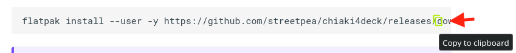
and pasting with Ctrl+V or right-click->paste in regular windows and Ctrl+Shift+V or right-click->paste in konsole windows.
Switching into Desktop Mode
-
Hit the
Steambutton on your Steam Deck -
Navigate to the
Powersection on the menu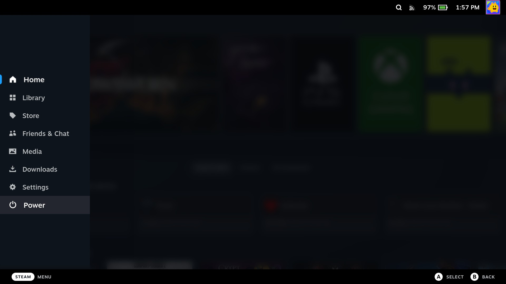
-
Choose
Switch to Desktop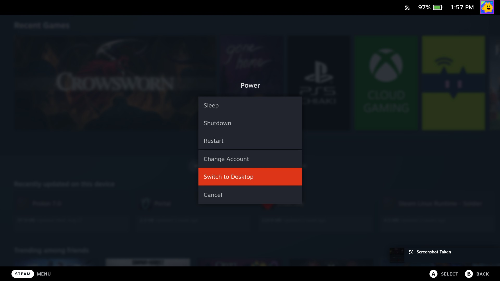
Navigating Desktop Mode
This install requires entering into Desktop Mode. Please connect the following to your Steam Deck:
- external keyboard (You can use
Steam+ X to bring up and use the virtual keyboard and make liberal use of copy/paste if you really need to, but it is a much worse experience)
-
external mouse (can use the touchpad/trackpads on the device instead)
-
external monitor (can use the native Steam Deck screen instead)
Installing chiaki4deck¶
Copying from and Pasting into Konsole Windows
You can copy from and paste into konsole windows with Ctrl+Shift+C (copy) and Ctrl+Shift+V (paste) instead of the normal Ctrl+C (copy) and Ctrl+V (paste) shortcuts. In fact, Ctrl+C is a shortcut to terminate the current process in the konsole. Additionally, you can still right-click and select copy or paste as per normal.
-
Open the Discover store
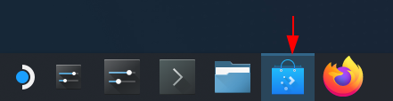
-
Search for
chiaki4deckin the search bar
-
Click Install
About chiaki4deck
This is a flatpak I created for chiaki4deck from updated Chiaki source code is available on Flathub. This is the recommended install as it is the most straightforward.
However, you can also build the flatpak yourself (recommended for users who want to add their own source code changes on top of the ones I've made) by following the instructions in Building the flatpak yourself.
Configuring chiaki4deck¶
Registering your PlayStation¶
Make sure you're on the right tab!
If you haven't set up the Chiaki flatpak on Steam Deck, please switch to the New to Using Chiaki on Steam Deck Tab. If you have set up the official Chiaki flatpak before (no, you don't have to uninstall Chiaki  ) and want to try
) and want to try chiaki4deck, you're in the right place! 
-
Create initial file templates for
chiaki4deck-
Open
chiaki4deckby clicking the Steam icon in the bottom left and searching for it in theGamessection via the graphical user interface (GUI) or by enteringflatpak run io.github.streetpea.Chiaki4deckin thekonsole.What if chiaki4deck doesn't appear in the
Gamessection?If
chiaki4deckdoesn't appear in theGamessection, go toAll Applicationsand search forchiaki4deckthere. It should show up in theGamessection, but I've noticed that sometimes it only shows up in its appropriate section after a restart. Going toAll Applicationsworks in all cases. -
Close
chiaki4deck
-
-
Copy your configuration file from the Chiaki flatpak with the following
konsolecommandcp ~/.var/app/re.chiaki.Chiaki/config/Chiaki/Chiaki.conf ~/.var/app/io.github.streetpea.Chiaki4deck/config/Chiaki/Chiaki.conf -
Open
chiaki4deckagain and you should see your registered console and settings from Chiaki now copied tochiaki4deck.What Did I Just Do?
You just replaced the config file (flatpak stores config files for each app in
~/.var/app/appid/configwhereappidis your app's appid) forchiaki4deck(which doesn't have your details yet) with the one for Chiaki (which you already went through the registration process and configured settings for) so that you don't have to go back through the same process withchiaki4deckand can start using it as quickly as possible.
-
Set up your PlayStation console for remote play
-
Enable remote play
Go to
Settings -> System -> Remote Playand turn on:Enable Remote Play
-
Go to
Settings -> Remote Play Connection Settingsand turn on:Enable Remote Play
-
Go to
Settings -> Account Management -> Activate as Your Primary PS4and select:Activate
-
Enable waking your console from rest mode
Go to
Settings -> System -> Power Saving -> Features Available in Rest Modeand turn on:Stay Connected to the InternetEnable Turning on PS5 from Network
Go to
Settings -> Power Save Settings -> Set Function Available in Rest Modeand turn on:-
Stay Connected to the Internet -
Enable turning on PS4 from Network
-
-
Get your PlayStation AccountID (This is needed to access your ps account)
-
Run the flatpak with the
psn-account-idcommandflatpak run --command=psn-account-id io.github.streetpea.Chiaki4deck -
Follow the prompts, opening a browser and logging in with your PlayStation network account details when prompted.
-
Copy the Account-ID you receive and store it in a safe place. This is the Account-ID used for remote play that is associated with your PlayStation online account username and password.
-
-
Open
chiaki4deck(click the Steam icon in the bottom left and search for it in theGamessection via GUI orflatpak run io.github.streetpea.Chiaki4deckviakonsole) and your PlayStation system should be automatically discovered.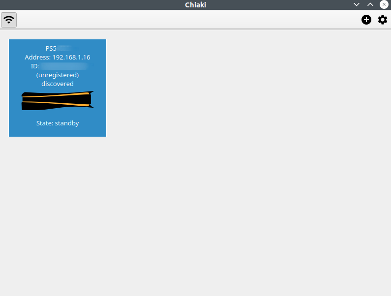
What if my PlayStation Console isn't Appearing?
Make sure your Steam Deck is on the same wireless network as your PlayStation system and that the PlayStation console is either on or in sleep/rest mode. If this doesn't work, you can always try restarting your Steam Deck and connecting to the network again.
-
Register your PlayStation console
-
Double click on the blue box to bring up a registration window
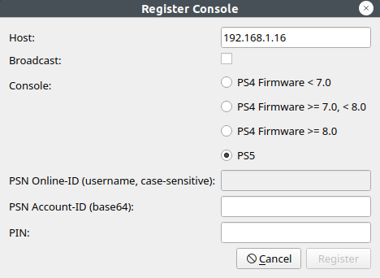
-
Choose your console type
-
Enter your PSN Account-ID obtained in step 1 above.
-
Get a registration code for remote play
Go to
Settings -> System -> Remote Play -> Link DeviceGo to
Settings -> Remote Play -> Add Device -
Enter the code from your device in the
PINfield -
Click Register (will become available when all necessary fields are filled)
-
-
You should see this upon successful registration
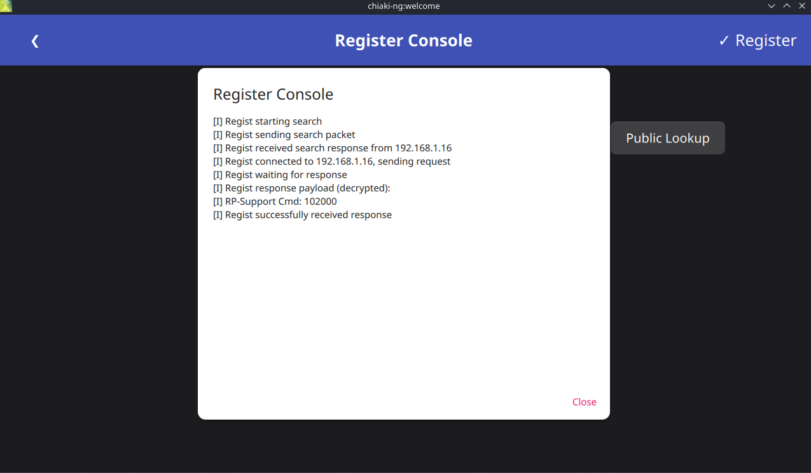
-
Click out of the dialog boxes and see that your console now shows registered
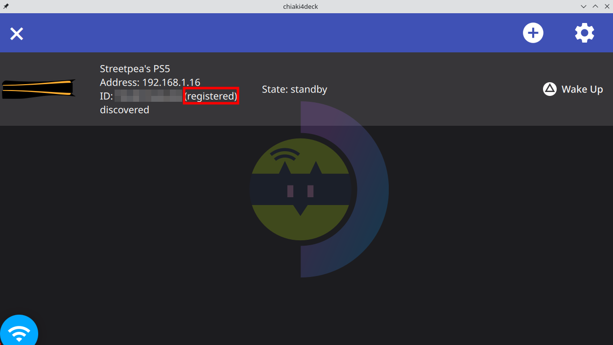
Testing your Connection¶
-
Test waking your console from rest mode
-
Put your console in rest mode
-
Open
chiaki4deck -
Double click on the box with the console icon colored orange (State: standby).
-
When prompted with, "The Console is currently in standby mode.Should we send a Wakeup packet instead of trying to connect immediately?":
- choose Yes
-
Your PlayStation console should wake up and the box with the console icon should turn from orange to blue (State: ready).
Success
Now it's time to test connecting via PlayStation Remote Play in the next step!
Here's how to get back on the happy path
-
Make sure your PlayStation shows as registered and is currently in sleep mode. If it's not in sleep mode, you can't wake it up.
-
Make sure that you have enabled turning on your PlayStation console from rest mode:
Go to
Settings -> System -> Power Saving -> Features Available in Rest Modeand turn on:Stay Connected to the InternetEnable Turning on PS5 from Network
Go to
Settings -> Power Save Settings -> Set Function Available in Rest Modeand turn on:-
Stay Connected to the Internet -
Enable turning on PS4 from Network
-
-
-
Test PlayStation Remote Play
-
Double click on the box with the now blue console icon (State: ready)
-
Test launching a game if you want
-
Exit out of the window once you've tested the connection.
Purrfect

You were able to launch your stream and connect. Maybe, you even got a game running.

An error occurred
-
Please try closing and re-launching to make sure it wasn't some sort of temporary snafu (maybe your console was updating something and didn't want to let you connect right away).
-
Make sure your PlayStation appears in the Chiaki menu, is labelled (registered) and is animated with either an orange (State: standby) or blue (State: ready) light.
-
Choosing your Remote Play Settings¶
Here are different settings you can use for Chiaki/chiaki4deck depending on your network connection. The default configuration is for remote play on a home network only. This means that it is dependent only on the performance / strength of your wireless router (or ethernet connection) [recommended to connect the PlayStation console via ethernet and Steam Deck via wi-fi to optimize performance and portability] and not on your Internet (World Wide Web) connection.
What does that mean for me?
If you are in an area with bad Internet, as long as you have a good wireless router, you can get close to native performance.
-
Open
chiaki4deckand click the gear icon in the top right to open the settings menu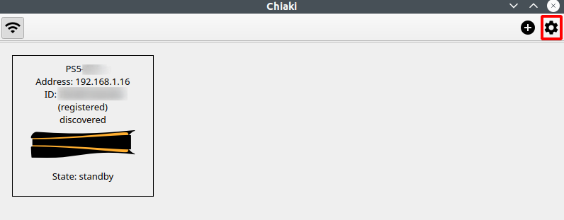
-
Adjust the settings to your preferences. Below are the settings you'll want to try first with your PlayStation console (choose the PS5/1080p tab if you have a PS5 or the PS4/720p if you have a PS4). If you are having issues with your PS5 connection, please try the PS4/720p settings with your PS5 since they require significantly less bandwidth from your wireless router.
Stream output can be up to 1080p. Here are the settings that are currently working well for me. This results in a native-like experience for most games on my network/setup.
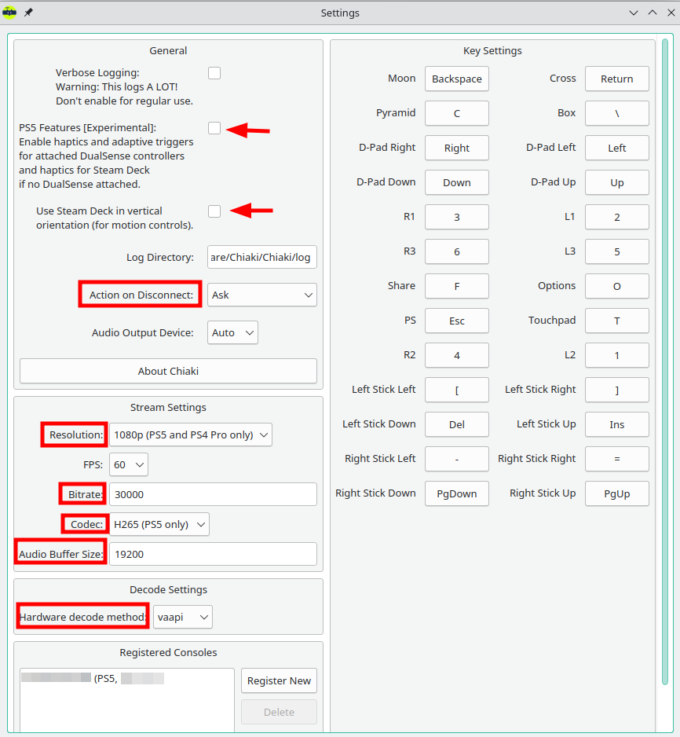
Enabling Experimental PlayStation 5 Features
If you want to enable haptics for Steam Deck and DualSense (must be attached via USB) and adaptive triggers for DualSense (USB or bluetooth), check the box that the red arrow is pointing to in the image above. This is opt-in now since these features are currently experimental. Additionally, for the DualSense controller to work with these features in game mode, please disable Steam Input for the DualSense controller following the "Turning off Steam Input" tab in this section.
Why 1080p if the Steam Deck is only 800p?
Using 1080p results in a better picture for me than 720p. The biggest factor in this seems to be chroma-sub sampling. In simple terms, the colors for an image are compressed and so you get a much lower resolution of color data than your image resolution. This means a 1080p image (with a high bitrate) will have more color data than a 720p image even if the image resolution itself ends up being 720p (since the color resolution will be higher than the equivalent 720p picture's color resolution). This results in an image that has more pop to it. Thus, I recommend streaming at 1080p if you have the bandwidth (good enough wireless router).
However, if you are having issues with your wireless connection (i.e choppy audio, flashes in your video, or lag) while playing, then please use 720p instead. The gains you get from 1080p are nice, but aren't worth having a bad connection.
For PS4, the stream is limited to 720p. Using the defaults for most values works well here, resulting in native-like (albeit w/ a diminished resolution) experience for most games on my network/setup.

Use Steam Deck in Vertical Orientation
For Steam Deck, this enables the option to use the Steam Deck in vertical orientation in games that assume a horizontal controller for motion controls. Since most PlayStation games assume a horizontal facing controller, (even though data is sent for using the controller in any orientation) most games only work if the Steam Deck is horizontal (like you would hold a DualSense/DualShock 4 controller). This option enables you to play those games in vertical mode by allowing you to use roll instead of yaw and having a vertical orientation correspond to a horizontal facing controller. Some games, such as Astro's playroom use the orientation values and enable you to use the controller in various different positions (i.e. this option isn't needed for using the controller in vertical orientation for that small subset of games).
Putting your PlayStation Console to Sleep Automatically
For
Action on Disconnect, chooseAsk(the default) to get prompted (use the touchscreen to respond to prompt window) about putting your PlayStation to sleep when you close your session with Ctrl+Q (you will add this shortcut as part of you controller configuration in controller section).If you prefer, you can also use
Enter Sleep Modeto automatically put your PlayStation console to sleep as soon as you close your session with Ctrl+Q
Performance of Chiaki/chiaki4deck¶
My Experience¶
Ultimately, the performance will depend on the capability of your wireless router and which system (\(PS5 > PS4 Pro > PS4\)) you are using. Here are some notes from my experience using chiaki4deck on my Steam Deck with a PS5 console and a relatively good (\(450 Mbps\) for \(2.4GHz\) / \(1,300 Mbps\) for \(5GHz\)) wireless router.
My Wireless Connection by the Numbers
I'm using the \(5GHz\) band for chiaki4deck on my Steam Deck, meaning the total bandwidth for all devices on my local network is \(1,300 Mbps\) (remember Internet connection itself doesn't matter since we're only using our wireless router for local streaming). Since I am using the settings in Choosing Your Remote Play Settings, I'm using \(30,000 Kbps\) or \(30 Mbps\) out of the total of \(1,300 Mbps\). This means I'm using about \(2\%\) of my \(5GHz\) band. In other words, I still have plenty of bandwidth for watching Netflix  while I play on my Steam Deck!
while I play on my Steam Deck!
What Performance Can I Expect?
I am currently getting close to native performance using chiaki4deck on my Steam Deck with my PS5. This gives me better performance than I get playing performance heavy games directly on Steam Deck (like that one game where the kid gets bit by a  )
)
Benefits:
- 5-6 hours of battery life (vs 1-2 hours playing the same games natively on Steam Deck)
- access to PlayStation collection (games I have already purchased or have via PS Plus) including exclusives
- no fan noise when playing
- PlayStation Trophies
Negatives:
- occasional performance issues with certain games (specifically games with VSync enabled)
Games I've Played Successfully Using chiaki4deck So Far...
- Stray
- God of War (2018)
- Genshin Impact (turned off VSync in settings to get rid of white flashes during gameplay)
- Sekiro (occasional white flashes in areas with high crowds. Luckily, these went away as I got further in the game and never affected my ability to progress. Unfortunately, this seems to be due to VSync being enabled automatically with no option to turn it off. It only affected about 3 hours of the game in total [12 flashes with 1 or 2 every 15-30 minutes or so] before it went away completely).
- Fall Guys
- MultiVersus
- Red Dead Redemption 2
- Marvel's Spider Man
- Ghost of Tsushima (changed from Resolution Mode to Performance Mode in game settings for native-like performance)
- Chicory: A Colorful Tale
- Concrete Genie
- Astro's Playroom
- Death's Door
- Resident Evil 0
- The Last of Us Remastered
Troubleshooting Performance Issues¶
Examples of performance issues
- white flashes
- green flashes
- audio choppiness/crackling
- excessive lag
To fix these issues, try the following:
-
If you are not using the settings listed in Choosing Your Remote Play Settings, try with those settings and see if that fixes it for you.
-
Switch to 720p from 1080p
720p requires less bandwidth than 1080p. This will help if your wireless connection is the problem, especially since it's very easy to do. This can fix video artifacts (white / green flashes) and audio choppiness (both results of connection problems).
-
Try short preamble
If you are still having trouble (I didn’t need this but it can help in general and helped significantly improve performance for other streaming services such as Game Pass on my Steam Deck), try using using short preamble instead of long preamble in your router settings. You need to change this directly in your router settings for the given network and can do it per network if you set up more than one. This is incompatible with old devices (using wifi b/g instead of n or ac). Devices from 2011 and newer are required by law to support it and so will definitely work. Older devices may or may not support it depending on if they have either n or ac wireless support. Short preamble helps the \(5GHz\) connection for devices that support it (essentially anything that’s connecting on a \(5GHz\) network should use it). For streaming, you can set up one network that uses short for your newer devices (\(5GHz\) network for me) and one with long for older devices (\(2.4 GHz\) network for me since older devices don’t support \(5GHz\) anyway). My connection worked fine with long preamble on a \(2.4 GHz\) network for Chiaki but short (and a \(5GHz\) network for that matter) works better in general for devices that support it and has helped others using Chiaki as well as me to help reduce Game Pass streaming lag (which is still much worse than Chiaki and not close to native, but works well for games that don’t require fast or moderately fast reaction times).
-
For specific game issues, change game resolution settings
For example, the game may be set to 4k / resolution mode even though it's only streaming at 1080p or even 720p. Additionally, it may be using HDR (which the Steam Deck screen doesn't support). Switching these settings off on a game level results in less processing power used on the game and thus more left over for streaming as well as hitting a higher framerate. For example, I switched
Ghost of Tsushimafrom resolution mode to performance mode and noticed that the occasional performance problems I was experiencing evaporated and the visual quality became much more stable due to the lack of occasional stutters. It went from being playable but a noticeable downgrade to indistinguishable from native. -
Turn off VSync or the equivalent in games that use it
VSync should only be enabled on the client side while streaming and having it enabled in the game itself can cause issues since it requires some extra overhead and can't actually sync with your screen if you're streaming the game. This resulted in issues with white flashes for me while playing Genshin Impact and Sekiro. When I turned off VSync in the Genshin Impact settings, these flashes (which had happened multiple times a minute with VSync on) disappeared. This affects only a small number of games, but is something to watch out for if you randomly have an issue with one game while others run well with Chiaki/
chiaki4deck. -
Switch to H264 encoding
Generally, H265 (a.k.a HEVC) results in better quality than H264. However, H264 can be more stable for some users, eliminating things like white flashes (this may result in drops in visual quality but a more stable connection). If you are having issues with white flashes, this is something to give a shot.
-
Switch framerate to 30fps
30fps requires less bandwidth than 60fps. This will help if your wireless connection is the problem, especially since it's very easy to do. This can fix video artifacts (white / green flashes) and audio choppiness (both results of connection problems). I put this last because it is the biggest performance downgrade and most of the time you don't need to do this. However, switching to 30fps / 720p at the default settings is the most surefire way to fix connection issues and a last resort if the methods with virtually no downsides don't do the trick.
Chiaki/chiaki4deck via Internet (Outside of Home Connection)¶
Chiaki/chiaki4deck Outside of your Home Network
You can also open up ports to connect from the Internet, but the performance will not be as good, with increased input lag being the most noticeable downgrade. In this scenario, your connection will depend on both the Internet connection of your PlayStation console via the router and the Internet connection of your computer via your location (internet speeds themselves will apply). The farther away (more hops from your router) you get, the worse the performance will get. If you are still in the same state, it will likely still be relatively good. However, if you go cross-country or something like that, it can degrade significantly. Nevertheless, it can be very convenient to use while traveling, especially when playing less timing intensive games (i.e., games that would play well via cloud streaming). Setup is covered in the next remote connection section.
Set up chiaki4deck to work outside of your home network¶
Set Static IP¶
In order to prevent your IP from changing which would break the port forwarding rules if you ever disconnect your PlayStation console from your network and reconnect it (especially if other devices are added to the network in the meantime), you should go into your router settings and reserve an IP address for your PlayStation (DHCP IP reservation / "static" IP) or create a hostname for it. For a TP-Link, Netgear, Asus or Linskys router, follow these instructions. If you have a different router, you can search (using a search engine such as DuckDuckGo or Google) for instructions for that specific router using the formula "dhcp reservation myroutername router" such as "dhcp reservation netgear router" and follow the instructions to reserve an IP for your PlayStation console so that it won't change. Alternatively, if your router has an option to set hostnames for your devices, you can set a hostname for your PlayStation console and use your hostname in the automation instead of a static IP address.
Port Forwarding¶
Forward the ports for your console on your router following this port forwarding guide starting with selecting your router
Close out of ads
If any ads appear as you navigate the website just hit the close button on the given advertisement to continue on your journey.
| Port | Connection Type |
|---|---|
| 9295 | TCP |
| 9296 | UDP |
| 9297 | UDP |
| 9302 | UDP |
| Port | Connection Type |
|---|---|
| 987 | UDP |
| 9295 | TCP |
| 9296 | UDP |
| 9297 | UDP |
Find Router's IP¶
On a computer connected to your router such as your Steam Deck (make sure to disconnect from a vpn first if you're connected to one to get the right IP) use one of the following:
Visit whatismyip in your browser and copy the displayed IP
curl checkip.amazonaws.com
Test Connection¶
Add your remote IP in the automation script when going through the next (automation) section. Once setup on your local network, try to launch the PlayStation when connected to a different network such as a mobile hotspot.
Add console to GUI using remote IP as a new connection and connect.
If my connection stops working, what should I do?
If the connection stops working please make sure that the IP address for your router hasn't changed by checking it again via one of the methods above or a different one to make sure it's the same. If it has changed, you will need to update to the new IP address of your router.
Automating chiaki4deck Launch¶
Now that you have chiaki4deck configured, it's time to make it wake up your PlayStation and connect to it automatically.
So Why Should I Care?
This is especially convenient for the Steam Deck's Game Mode where an automated launch eliminates both the need to tap furiously at your touchscreen to launch the application and the glitches that would arise (flashes on your screen) when it would switch between the 2 open Chiaki windows (since only 1 window is opened with the automated launch). It also gives a default game mode option to launch in fullscreen, stretch or zoomed mode, making it easier to use the 3 games modes. Finally, it allows for passing your login passcode automatically instead of manually typing in each time (for those of you with a login passcode set on your PlayStation console).
Sleep Mode Required
For this to work, your PlayStation needs to either be in rest/sleep mode or on (so that it is listening for the wake up signal). This means you will want to keep your PlayStation in rest/sleep mode when you are not playing (instead of off).
-
Open a
konsolesession (launch it viaApplicationsby clicking the Steam icon in the bottom left and searching for it in theAll Applicationssection) -
Get your PlayStation IP
-
Get your registered PlayStation's IP Address
-
Launch Chiaki via your desktop or via:
flatpak run io.github.streetpea.Chiaki4deck -
Get your IP address via the console widget and then close the window and return to the
konsolesession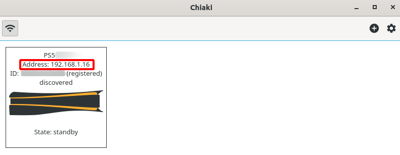
Prevent IP From Changing
In order to prevent your IP from changing (which would make the script stop working) if you ever disconnect your PlayStation console from your network and reconnect it (especially if other devices are added to the network in the meantime), you should go into your router settings and reserve an IP address for your PlayStation (DHCP IP reservation / "static" IP) or create a hostname for it. For a TP-Link, Netgear, Asus or Linskys router, follow these instructions. If you have a different router, you can search (using a search engine such as DuckDuckGo or Google) for instructions for that specific router using the formula "dhcp reservation myroutername router" such as "dhcp reservation netgear router" and follow the instructions to reserve an IP for your PlayStation console so that it won't change. Alternatively, if your router has an option to set hostnames for your devices, you can set a hostname for your PlayStation console and use your hostname in the automation instead of a static IP address.
-
-
-
Create script for waking PlayStation and launching Chiaki
-
Run the gen-launcher script using the following command in your
konsoleand answer the prompts (you will need your IP address from step 2 above)bash <(curl -sLo- https://raw.githubusercontent.com/streetpea/chiaki4deck/main/scripts/gen-launcher.sh)What Do the Different Modes (i.e., fullscreen [uses Normal], zoom, stretch) Look Like?
To see examples of the different launch modes, visit the Updates section
Connecting Outside of Your Local Network
You can add an external IP or hostname in addition to your local one to connect from an external network. To do so, you need to set up port forwarding as detailed in the prior remote connection section. Then, you can choose to setup an external IP/hostname as part of the setup script process. The automation will take your home network name (SSID) to check if you are home or not to use the correct IP/hostname automatically. The script will automatically detect your current SSID. Thus, if you are on your home network while running the setup script (
gen-launcher.sh), it will detect your home ssid so you will just need to hit Enter. If not, you can enter ot manually (instead of using the default of your Steam Deck's current network's SSID). You can get your home SSID for manual entry viaiwgetid -rfrom thekonsolewhen connected to your home network or by looking in your network history on your Steam Deck (it will be the connection name for your home network such asStreetPea-5G). Of course, if you want to skip this now and setup the external address later, you can always rerun the automation or choose a placeholder external IP now and manually edit it to your desired IP/hostname later.Example Output [click to expand me]
bash <(curl -sLo- https://raw.githubusercontent.com/streetpea/chiaki4deck/main/scripts/gen-launcher.sh) 1) PlayStation 4 2) PlayStation 5 Please select the number corresponding to your Playstation Console: 2 Option 2: PlayStation 5 was chosen HOME ADDRESS ------------- 1) IP 2) hostname NOTICE: Use 1 unless you created a hostname (FQDN) for your PlayStation Please select the number corresponding to your address type: 1 Option 1: IP was chosen Enter your PlayStation IP (should be xxx.xxx.xxx.xxx like 192.168.1.16): 192.168.1.16 Do you have a separate address (DNS or IP) to access this console away from home? (y/n): y Enter your home SSID [hit enter for default: StreetPea-5G]: AWAY ADDRESS ------------- 1) IP 2) hostname NOTICE: Use 1 unless you created a hostname (FQDN) for your PlayStation Please select the number corresponding to your address type: 2 Option 2: hostname was chosen Enter your PlayStation FQDN (hostname) (should be abc.ident like foo.bar.com): foo.bar.com 1) fullscreen 2) zoom 3) stretch Please select the number corresponding to the default mode you want to use: 3 Option 3: stretch was chosen Do you have a PlayStation Login Passcode? (y/n): y Enter your 4 digit PlayStation Login Passcode: 1111 Would you like to test the newly created script? (y/n): y sounds good, launching script now... [I] Logging to file /home/deck/.var/app/io.github.streetpea.Chiaki4deck/data/Chiaki/Chiaki/log/chiaki_session_2023-01-06_08-33-49-583583.log [I] Chiaki Version 2.1.1 [I] Using hardware decoder "vaapi" Device Found type: 28de 1205 path: /dev/hidraw3 serial_number: Manufacturer: Valve Software Product: Steam Deck Controller Release: 200 Interface: 2 Usage (page): 0x1 (0xffff) [I] Connected Steam Deck ... gyro online [I] Controller 0 opened: "Microsoft X-Box 360 pad 0 (030079f6de280000ff11000001000000)" [I] Starting session request for PS5 [I] Trying to request session from 192.168.1.16:9295 [I] Connected to 192.168.1.16:9295 [I] Sending session request [I] OpenGL initialized with version "4.6 (Core Profile) Mesa 22.2.4 (git-80df10f902)" [I] Session request successful [I] Starting ctrl [I] Ctrl connected to 192.168.1.16:9295 [I] Sending ctrl request [I] Ctrl received http header as response [I] Ctrl received ctrl request http response [I] Ctrl got Server Type: 2 [I] Ctrl connected [I] Ctrl received Login PIN request [I] Ctrl requested Login PIN [I] Session received entered Login PIN, forwarding to Ctrl [I] Ctrl received entered Login PIN, sending to console [I] Steam Deck Haptics Audio opened with 2 channels @ 3000 Hz with 150 samples per audio analysis. [I] Ctrl received Login message: success [I] Ctrl received valid Session Id: 1673022831TZLW3NGFZP76ZLUPAOHZBA64PQQ2AF6LXUET2OFDTKAJF4XVGUAXOMOQDXBVVCAS [I] Starting Senkusha [I] Enabling DualSense features [I] Takion connecting (version 7) [I] Takion enabled Don't Fragment Bit [I] Takion sent init [I] Takion received init ack with remote tag 0xb18ccf, outbound streams: 0x64, inbound streams: 0x64 [W] Received Ctrl Message with unknown type 0x16 [W] offset 0 1 2 3 4 5 6 7 8 9 a b c d e f 0123456789abcdef [W] 0 01 ff .. [I] Takion sent cookie [I] Takion received cookie ack [I] Takion connected [I] Senkusha sending big [I] Senkusha successfully received bang [I] Senkusha Ping Test with count 10 starting [I] Senkusha enabled echo [I] Senkusha sending Ping 0 of test index 0 [I] Senkusha received Pong, RTT = 3.019 ms [I] Senkusha sending Ping 1 of test index 0 [I] Senkusha received Pong, RTT = 2.841 ms [I] Senkusha sending Ping 2 of test index 0 [I] Senkusha received Pong, RTT = 3.460 ms [I] Senkusha sending Ping 3 of test index 0 [I] Senkusha received Pong, RTT = 2.504 ms [I] Senkusha sending Ping 4 of test index 0 [I] Senkusha received Pong, RTT = 3.030 ms [I] Senkusha sending Ping 5 of test index 0 [I] Senkusha received Pong, RTT = 2.778 ms [I] Senkusha sending Ping 6 of test index 0 [I] Senkusha received Pong, RTT = 3.131 ms [I] Senkusha sending Ping 7 of test index 0 [I] Senkusha received Pong, RTT = 2.795 ms [I] Senkusha sending Ping 8 of test index 0 [I] Senkusha received Pong, RTT = 2.992 ms [I] Senkusha sending Ping 9 of test index 0 [I] Senkusha received Pong, RTT = 3.064 ms [I] Senkusha disabled echo [I] Senkusha determined average RTT = 2.961 ms [I] Senkusha starting MTU in test with min 576, max 1454, retries 3, timeout 14 ms [I] Senkusha MTU request 1454 (min 576, max 1454), id 1, attempt 0 [I] Senkusha MTU 1454 success [I] Senkusha determined inbound MTU 1454 [I] Senkusha starting MTU out test with min 576, max 1454, retries 3, timeout 14 ms [I] Senkusha sent initial client MTU command [I] Senkusha received expected Client MTU Command [I] Senkusha MTU 1454 out ping attempt 0 [I] Senkusha MTU ping 1454 success [I] Senkusha determined outbound MTU 1454 [I] Senkusha sending final Client MTU Command [I] Senkusha is disconnecting [I] Senkusha closed takion [I] Senkusha completed successfully [I] Takion connecting (version 12) [I] Takion sent init [I] Takion received init ack with remote tag 0x7033129, outbound streams: 0x64, inbound streams: 0x64 [I] Takion sent cookie [I] Takion received cookie ack [I] Takion connected [I] StreamConnection sending big [I] BANG received [I] StreamConnection successfully received bang [I] Crypt has become available. Re-checking MACs of 0 packets [W] Received Ctrl Message with unknown type 0x41 [W] offset 0 1 2 3 4 5 6 7 8 9 a b c d e f 0123456789abcdef [W] 0 00 00 00 00 02 01 00 00 ........ [D] StreamConnection received audio header: [D] offset 0 1 2 3 4 5 6 7 8 9 a b c d e f 0123456789abcdef [D] 0 02 10 00 00 bb 80 00 00 01 e0 00 00 00 01 .............. [I] Audio Header: [I] channels = 2 [I] bits = 16 [I] rate = 48000 [I] frame size = 480 [I] unknown = 1 [I] ChiakiOpusDecoder initialized [I] Audio Device alsa_output.pci-0000_04_00.1.hdmi-stereo-extra2 opened with 2 channels @ 48000 Hz, buffer size 19200 [I] Video Profiles: [I] 0: 1920x1080 [I] StreamConnection successfully received streaminfo [I] Switched to profile 0, resolution: 1920x1080 [I] StreamConnection is disconnecting [I] StreamConnection sending Disconnect [I] StreamConnection was requested to stop [I] StreamConnection closed takion [I] StreamConnection completed successfully [I] Ctrl requested to stop [I] Ctrl stopped [I] Session has quit .__ .__ __ .__ _____ .___ __ ____ | |__ |__|____ | | _|__| / | | __| _/____ ____ | | __ _/ ___\| | \| \__ \ | |/ / |/ | |_/ __ |/ __ \_/ ___\| |/ / \ \___| Y \ |/ __ \| <| / ^ / /_/ \ ___/\ \___| < \___ >___| /__(____ /__|_ \__\____ |\____ |\___ >\___ >__|_ \ \/ \/ \/ \/ |__| \/ \/ \/ \/ .__ __ .___._. ______ ___________|__|______/ |_ ____ __| _/| | / ___// ___\_ __ \ \____ \ __\/ __ \ / __ | | | \___ \ \___| | \/ | |_> > | \ ___// /_/ | \| /____ >\___ >__| |__| __/|__| \___ >____ | __ \/ \/ |__| \/ \/ \/
-
Get your console nickname
-
It was the nickname listed with your console in the console widget. It can also be obtained with
flatpak run io.github.streetpea.Chiaki4deck listExample Output
Host: PS5-012In this example, the console nickname is
PS5-012, please use your nickname. If you have multiple, choose the one from the list you want and choose the corresponding regist_key in the next step (i.e., if you pick the console on the 2nd line here, pick the regist_key on the 2nd line in the next step).
-
-
Get your remote play registration key
-
Run the following command in your console
cat ~/.var/app/io.github.streetpea.Chiaki4deck/config/Chiaki/Chiaki.conf | grep regist_key | cut -d '(' -f2 | cut -d '\' -f1Example Output
2ebf539dChiaki Configuration File
This command is printing the Chiaki configuration file generated when you ran
chiaki4deckfor the first time. This is where the flatpak version of Chiaki saves your settings and details. In fact, all flatpaks store their details with the ~/.var/app/app_id pattern. If you want to look at the file itself and get the value you can open the file at/home/deck/.var/app/io.github.streetpea.Chiaki4deck/config/Chiaki/Chiaki.confand look for the remote play registration key [rp_regist_key].
-
-
Choose your default launch option (fullscreen, zoom, or stretch)
-
fullscreen: A full screen picture with black bars, aspect ratio maintained
-
zoom: A full screen zoomed picture with no black bars, aspect ratio maintained, edges of image cut off by zoom
-
stretch: A full screen stretched picture with no black bars, aspect ratio slightly distorted by vertical [in the case of Steam Deck] stretch
Default Launch Option
This is the option remote play will launch with. You can always toggle to a different option by using the Ctrl+S (toggles between stretch and normal) and Ctrl+Z (toggles between zoom and normal) options which should be set if desired in the Steam controller configuration for the game. See Controller Configuration Section for more details.
-
-
Get your 4 digit PlayStation login passcode (if applicable). You will know your PlayStation login passcode if you have one because you have to enter it every time you log onto your PlayStation console. If you don't have to do this, you don't have a PlayStation login passcode and will leave that field blank.
-
Create a new blank file located in the folder
/home/deck/.var/app/io.github.streetpea.Chiaki4deck/config/ChiakinamedChiaki-launcher.shtouch "${HOME}/.var/app/io.github.streetpea.Chiaki4deck/config/Chiaki/Chiaki-launcher.sh" -
Open the
/home/deck/.var/app/io.github.streetpea.Chiaki4deck/config/Chiaki/Chiaki-launcher.shfile in your favorite editor and save the following output.#!/usr/bin/env bash connect_error_loc() { echo "Error: Couldn't connect to your PlayStation console from your local address!" >&2 echo "Error: Please check that your Steam Deck and PlayStation are on the same network" >&2 echo "Error: ...and that you have the right PlayStation IP address or hostname!" >&2 exit 1 } connect_error_ext() { echo "Error: Couldn't connect to your PlayStation console from your external address!" >&2 echo "Error: Please check that you have forwarded the necessary ports on your router" >&2 echo "Error: ...and that you have the right external PlayStation IP address or hostname!" >&2 exit 1 } wakeup_error() { echo "Error: Couldn't wake up PlayStation console from sleep!" >&2 echo "Error: Please make sure you are using a PlayStation 5." >&2 echo "Error: If not, change the wakeup call to use the number of your PlayStation console" >&2 exit 2 } timeout_error() { echo "Error: PlayStation console didn't become ready in 35 seconds!" >&2 echo "Error: Please change 35 to a higher number in your script if this persists." >&2 exit 1 } if [ "$(iwgetid -r)" == "<local_ssid>" ] then addr="<local_addr>" local=true else addr="<external_addr>" local=false fi SECONDS=0 # Wait for console to be in sleep/rest mode or on (otherwise console isn't available) ps_status="$(flatpak run io.github.streetpea.Chiaki4deck discover -h ${addr} 2>/dev/null)" while ! echo "${ps_status}" | grep -q 'ready\|standby' do if [ ${SECONDS} -gt 35 ] then if [ "${local}" = true ] then connect_error_loc else connect_error_ext fi fi sleep 1 ps_status="$(flatpak run io.github.streetpea.Chiaki4deck discover -h ${addr} 2>/dev/null)" done # Wake up console from sleep/rest mode if not already awake if ! echo "${ps_status}" | grep -q ready then flatpak run io.github.streetpea.Chiaki4deck wakeup -<playstation_console> -h ${addr} -r '<remote_play_registration_key>' 2>/dev/null fi # Wait for PlayStation to report ready status, exit script on error if it never happens. while ! echo "${ps_status}" | grep -q ready do if [ ${SECONDS} -gt 35 ] then if echo "${ps_status}" | grep -q standby then wakeup_error else timeout_error fi fi sleep 1 ps_status="$(flatpak run io.github.streetpea.Chiaki4deck discover -h ${addr} 2>/dev/null)" done # Begin playing PlayStation remote play via Chiaki on your Steam Deck :) flatpak run io.github.streetpea.Chiaki4deck --passcode <login_passcode> --<launch_option> stream '<console_nickname>' ${addr} -
Edit the
/home/deck/.var/app/io.github.streetpea.Chiaki4deck/config/Chiaki/Chiaki-launcher.shfile, replacing the following values for your values:-
<local_ssid>local network name found with:iwgetid -rMust Be Currently Connected to Local Network
You must be connected to your current local network for this
konsolemethod to work. Otherwise, it will give you the network you are currently connected to or nothing (if you're not currently connected to a network). If you're not connected to your home network you can view your SSID via the GUI using theVia GUItab.The connection name/SSID for your home network in Steam Deck network settings such as
StreetPea-5G. -
<local_addr>with local PlayStation IP -
<external_addr>with external IP or hostname.Filling this in Later
You can use your local PlayStation IP or something like
foo.bar.comas a placeholder if haven't set up an external IP/hostname yet. Then, if you decide to set up an external connection, you can manually substitute the "real" external IP/hostname. -
<console_nickname>Beware of '
If you have any ' in your nickname itself, such as
Street Pea's PS5, you will need enter the'as'\''. Thus, forStreet Pea's PS5instead of usingStreet Pea's PS5you would useStreet Pea'\''s PS5. All other characters are fine. This is due to the PlayStation console allowing any manner of names (including non-valid hostnames with all manner of special characters) and Chiaki using that name in its configuration file. -
<remote_play_registration_key> -
<launch_option> -
<playstation_console>(either 4 or 5) -
<login_passcode>(just erase this field if you don't have a login passcode)
Example Script with "fake" values [yours will be different]
#!/usr/bin/env bash connect_error_loc() { echo "Error: Couldn't connect to your PlayStation console from your local address!" >&2 echo "Error: Please check that your Steam Deck and PlayStation are on the same network" >&2 echo "Error: ...and that you have the right PlayStation IP address or hostname!" >&2 exit 1 } connect_error_ext() { echo "Error: Couldn't connect to your PlayStation console from your external address!" >&2 echo "Error: Please check that you have forwarded the necessary ports on your router" >&2 echo "Error: ...and that you have the right external PlayStation IP address or hostname!" >&2 exit 1 } wakeup_error() { echo "Error: Couldn't wake up PlayStation console from sleep!" >&2 echo "Error: Please make sure you are using a PlayStation 5." >&2 echo "Error: If not, change the wakeup call to use the number of your PlayStation console" >&2 exit 2 } timeout_error() { echo "Error: PlayStation console didn't become ready in 35 seconds!" >&2 echo "Error: Please change 35 to a higher number in your script if this persists." >&2 exit 1 } if [ "$(iwgetid -r)" == "StreetPea-5G" ] then addr="192.168.1.16" local=true else addr="foo.bar.com" local=false fi SECONDS=0 # Wait for console to be in sleep/rest mode or on (otherwise console isn't available) ps_status="$(flatpak run io.github.streetpea.Chiaki4deck discover -h ${addr} 2>/dev/null)" while ! echo "${ps_status}" | grep -q 'ready\|standby' do if [ ${SECONDS} -gt 35 ] then if [ "${local}" = true ] then connect_error_loc else connect_error_ext fi fi sleep 1 ps_status="$(flatpak run io.github.streetpea.Chiaki4deck discover -h ${addr} 2>/dev/null)" done # Wake up console from sleep/rest mode if not already awake if ! echo "${ps_status}" | grep -q ready then flatpak run io.github.streetpea.Chiaki4deck wakeup -5 -h ${addr} -r '2ebf539d' 2>/dev/null fi # Wait for PlayStation to report ready status, exit script on error if it never happens. while ! echo "${ps_status}" | grep -q ready do if [ ${SECONDS} -gt 35 ] then if echo "${ps_status}" | grep -q standby then wakeup_error else timeout_error fi fi sleep 1 ps_status="$(flatpak run io.github.streetpea.Chiaki4deck discover -h ${addr} 2>/dev/null)" done # Begin playing PlayStation remote play via Chiaki on your Steam Deck :) flatpak run io.github.streetpea.Chiaki4deck --passcode --zoom stream 'PS5-012' ${addr}Example is Without Login Passcode #
If you have a passcode you would set it like
--passcode 1111, changing the last line of the example above toflatpak run io.github.streetpea.Chiaki4deck --passcode 1111 --zoom stream 'PS5-012' 192.168.1.16 -
-
Make the script executable:
chmod +x "${HOME}/.var/app/io.github.streetpea.Chiaki4deck/config/Chiaki/Chiaki-launcher.sh"
-
-
Test your newly created script (if you haven't already) by running:
"${HOME}/.var/app/io.github.streetpea.Chiaki4deck/config/Chiaki/Chiaki-launcher.sh"We have liftoff!

Chiaki launched in your desired screen mode on your Steam Deck! Congratulations!
You are no longer on the happy path

Check the error message and fix issues if obvious. Otherwise, things to check:
-
Make sure your PlayStation console is in either rest/sleep mode or on (otherwise this won't work)
-
Double check the values you entered in the script to make sure they are correct.
-
Open your script at:
/home/deck/.var/app/io.github.streetpea.Chiaki4deck/config/Chiaki/Chiaki-launcher.shand try to run each command individually to see what's causing your problem. -
If issues persist with this and
chiaki4decklaunches fine regularly via the application link, just not the automation, feel free to reach out. If you think the documentation itself needs to be updated click the underneath "Was this page helpful?" and open the feedback form for this page. If you just need help, you can reach me via Reddit or email
Close
chiaki4deckgracefully by closing any open dialog boxes and then using Ctrl+Q on the stream window. Ifchiaki4deckdoesn't close gracefully, move your mouse to the top left corner of the stream window and a blue circle should highlight the corner of the screen. Click on it to see all of your windows and select thekonsolewindow. Then, close thekonsolewindow itself (click itsxicon in the top right corner). Next, you can relaunch the script again to make sure it wasn't a one-time snafu. Note: Chiaki seems to perform better (audio/visual quality) inGame Modevs.Desktop Modefor me. If issues persist, feel free to reach out via Reddit or email. If you think the documentation itself needs to be updated click the underneath "Was this page helpful?" and open the feedback form for this page. -
Adding Chiaki4Deck to Steam¶
Another Non-Steam Game
This is the same process as with other non-Steam games, tailored to the chiaki4deck script and images.
-
Open the
Add a Non-Steam Gameprompt-
Launch Steam by double clicking on the Steam icon in your desktop or finding it in your apps menu.
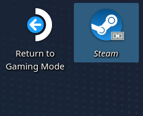
-
Click
Add a Non-Steam Gamefrom the Games Menu on the top left of the Steam UI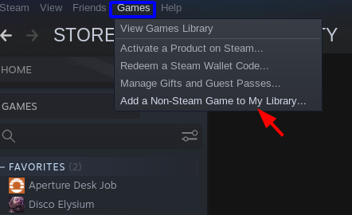
- Run the following command in a
konsolewindow to bring up theAdd Non-Steam Gameprompt
steam steam://AddNonSteamGame -
-
Choose to
BROWSEfor the game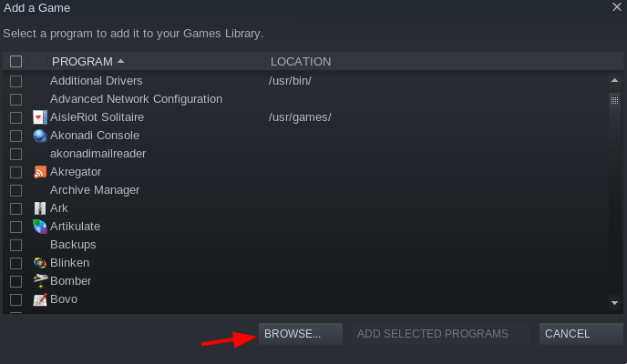
-
Choose
Chiaki-launcher.shas your gameIf You're missing
Chiaki-launcher.sh, You Skipped the Automation SectionChiaki-launcher.shis a script to launch Chiaki without the main gui, resulting in a much better experience on the Steam Deck (click for details) and makes it easier to use the 3 games modes. IfChiaki-launcher.shis missing, you almost certainly skipped the automation section. Don't worry, the fix is easy! Please complete the Automation section now and come back here afterward. It should take you ~ 5 minutes. Luckily,
Please complete the Automation section now and come back here afterward. It should take you ~ 5 minutes. Luckily,  there is a helper script that does most of the work for you! You simply answer a few questions I walk you through.
there is a helper script that does most of the work for you! You simply answer a few questions I walk you through.-
Choose
File type: All Filesat the bottom of the screen -
Choose
/home/deckfrom the dropdown at the top of the screen and then navigate by clicking on each folder to the folder/home/deck/.var/app/io.github.streetpea.Chiaki4deck/config/Chiaki -
Click on the
Chiaki-launcher.shfile in that directory -
Click
OPENon the bottom right
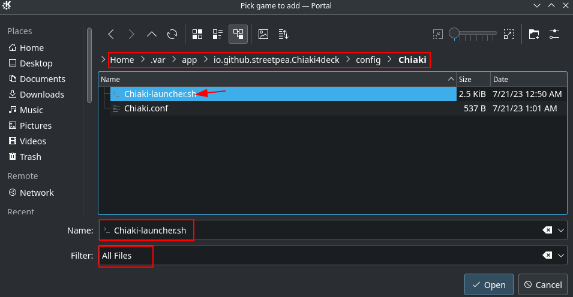
-
-
Click
Add Selected Programs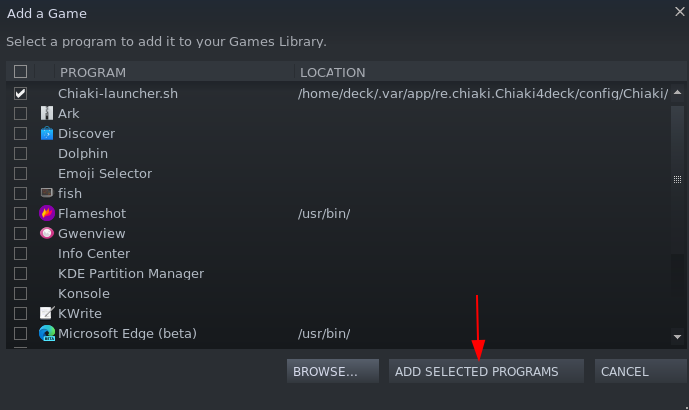
Configuring Name and Game Icons¶
Steam Application Name Matters!
For Non-Steam games (i.e., chiaki4deck), the Community Layouts controller layouts are based on the name the user set for the game in Steam when they exported it. Thus, in order to find the controller profiles I created for the game in your Community Layouts section later in this guide, your game name will need to the same as mine, (i.e., chiaki4deck). This naming is done in step 4 (below) and it's recommended that you just keep your game name as chiaki4deck to make your life easier.
What if naming chiaki4deck something else fills me with determination...?
If you want to use a different game name (i.e., Playstation Launcher Thingamajig) and want to use some or all of the controller layouts I have created (either directly or to download them and use them as a starting point to tinker from), name your game what you want in step 4. Then, when you get to the controller section, follow Retrieving chiaki4deck Controller Layouts when Using An Alternate Game Name. This walks you through temporarily renaming the app to chiaki4deck to access the controller layouts and save them as Personal Saves to access in the Your Layouts tab. Finally, you can rename you game to what you want and apply your layout to this differently named Steam game.
-
Acquire pictures to use for the game library in Steam
-
Get the images I used here for
chiaki4deckon my Steam Deck. -
Extract the package to a folder of your choice (such as your
Documentsfolder).How do I extract the images folder?
Double click on the downloaded package in your browser or find the file in your
Downloadsfolder and right-click on it choosing toExtract Toand then selecting the folder of your choice (such as yourDocumentsFolder)
Note
This will create a folder named
chiaki4deckImagesin the folder you choose to extract to
SteamGridDB
The images I provided are from Steam Grid DB and I do not own these images, I'm simply directing you to them for your convenience. You can find these and other images yourself on SteamGridDB as well as via other sources of your choosing.
-
-
If it is not already open, launch Steam and go to your game
Library. -
Right-click on
Chiaki-launcher.shin yourGameson the left-hand side and selectProperties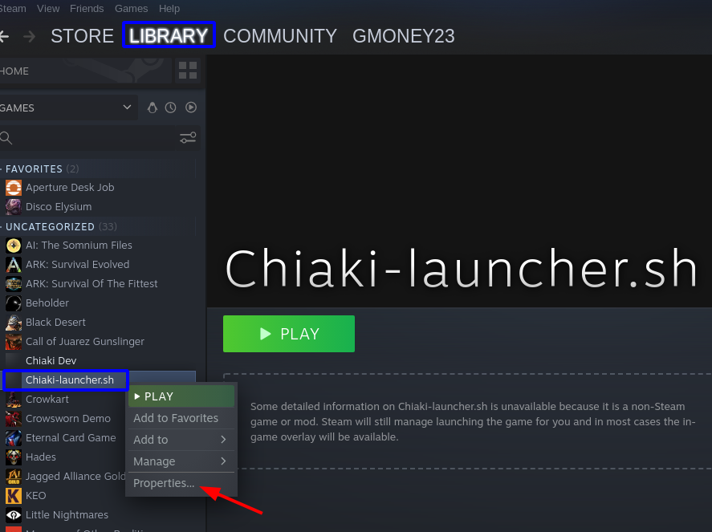
-
In the properties window that comes up rename
Chiaki-launcher.shand add the icon image-
Rename it
chiaki4deck -
Click on the blank square to add an image and navigate to the
chiaki4deckImagesfolder you created in step 1 above and select the icon image (icon-chiaki4deck.png). -
Click the x to exit the window
Finished chiaki4deck Properties

-
-
Go to your
Libraryin Steam and selectchiaki4deckfrom the left-hand list or one of theLibrarycategories to go tochiaki4deck's game page. -
Customize the background and logo for Chiaki4deck

-
Customize the background
-
Right-click on the blank space and select
Set Custom Background -
Browse to the
chiaki4deckImagesfolder you created earlier and select the background image (background-chiaki4deck.png)
-
-
Customize the logo
-
Right-click on the blank space and select
Set Custom Logo -
Browse to the
chiaki4deckImagesfolder you created earlier and select the logo image (logo-chiaki4deck.png)
-
Finished chiaki4deck Home Page
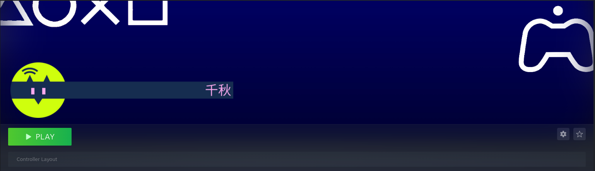
-
-
Customize the wide capsule and capsule images
-
Launch
chiaki4deckvia Steam by hitting thePlaybutton or any other method and then close. -
Go to your
Libraryin Steam and scroll to yourRECENT GAMESsection. -
Right-click on the blank picture for
chiaki4deck(should be 1st inRECENT GAMESand have a blank image with a landscape orientation) and selectManage->Set custom artwork
-
Browse to the
chiaki4deckImagesfolder you created earlier and select the wide capsule (wcap) image (wcap-chiaki4deck.png) -
Launch a different game and close it (this moves
chiaki4deckinto the second slot in recent games) -
Right-click on the blank picture for
chiaki4deck(should be 2nd in recent games and have a blank image with a portrait orientation) and selectManage->Set custom artwork. -
Browse to the
chiaki4deckImagesfolder you created earlier and select the capsule (cap) image (cap-chiaki4deck.png)
-
 Game (Mode) Time!
Game (Mode) Time!
You have successfully added chiaki4deck to Steam with pictures. 
You can now close any open applications and or terminals (forcing them to close if necessary) and then switch to Game Mode by clicking on the Return to Gaming Mode desktop icon.
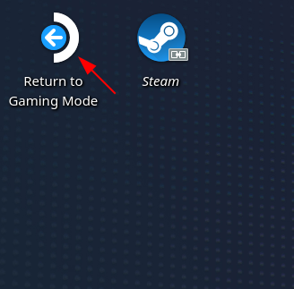
Configuring Steam Deck Controller Profile¶
Get all of the shortcuts mapped to Steam Deck controls. Start by going to the chiaki4deck game menu and selecting the controller layout to configure controller options.
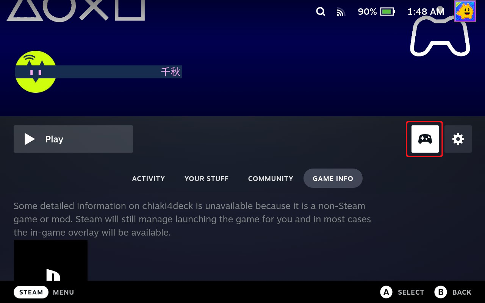
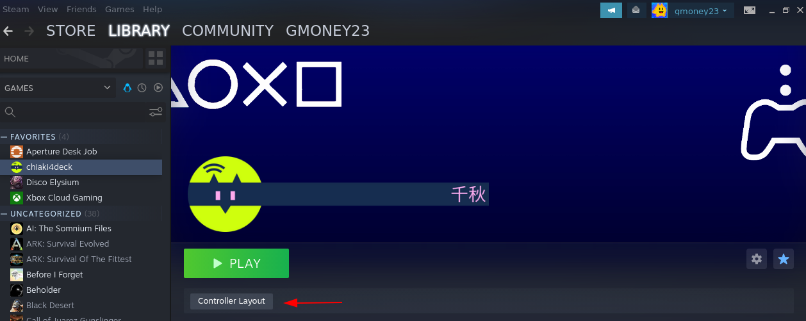
Retrieving chiaki4deck Controller Layouts when Using An Alternate Game Name [Most Users Can Skip This]¶
Only If You Didn't Use chiaki4deck As the Name of the Game in Steam [Click to Open Me]
-
Change the name of your game (i.e.,
Playstation Launcher Thingamajig) temporarily tochiaki4deck-
Open the properties menu of
Playstation Launcher Thingamajig(whatever you called it) by hitting the options button when selecting the game or the gear icon on the game page and selectingProperties...from the menu that pops up.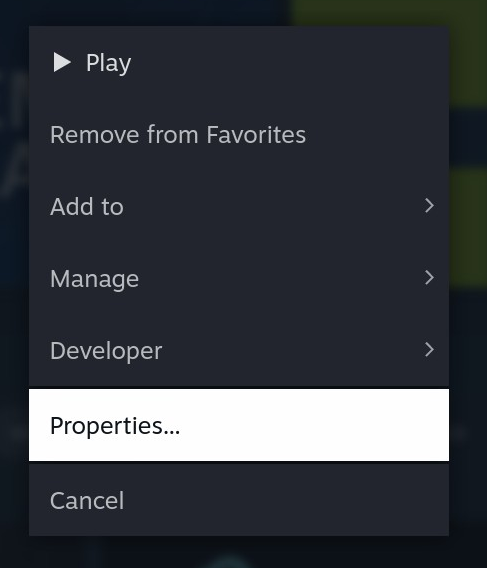
-
Change the game name to
chiaki4deck
-
-
Get the controller layout from the
COMMUNITY LAYOUTSvia the normal process.-
Click the current layout box (it says: Browse Community Layouts for games without official controller support underneath it).
-
Move to the
COMMUNITY LAYOUTStab and selectchiaki4deck+ micbygmoney23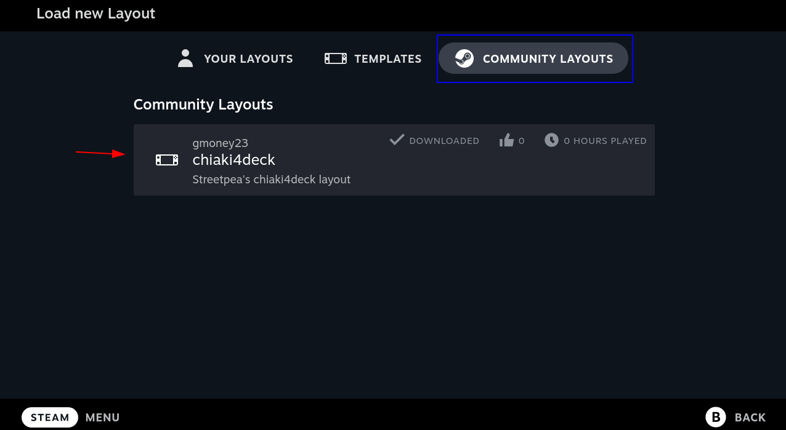
-
-
Export the layout as a
Personal Save-
Click the gear icon and select
Export Layoutas the option
-
Save the layout as a
New Personal Save
-
-
Change your game name to whatever you would like
-
Go back into the properties menu for the game
-
Change your game name back to what you wanted
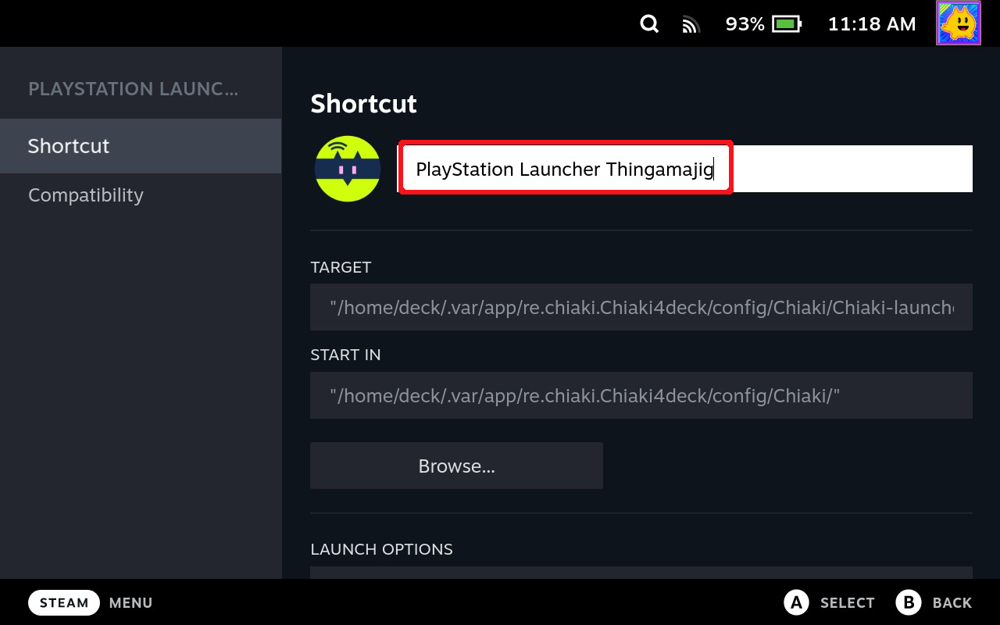
-
-
Choose the desired layout which is now available for your differently named game
-
Click on your current layout
-
Select the saved community layout from the
YOUR LAYOUTStab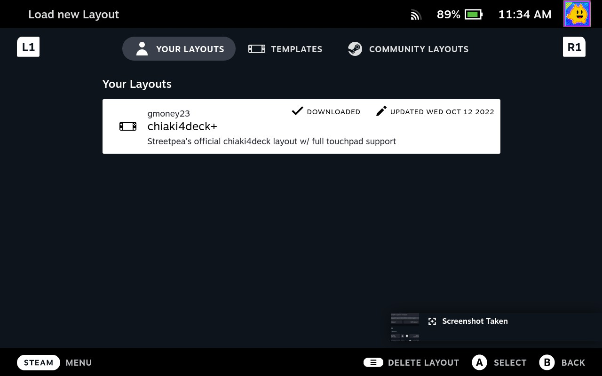
-
-
Play with the layout
Getting Steam Controls for Non-Steam Games
An interesting aside is that you can exploit this same process to get the official controller layout for a game that has a Steam version but you added as a non-Steam game. In that instance, you would be changing the game name to the Steam App ID for that game which you can find by searching SteamDB here among other ways (i.e., looking at the # in the URL of the game on the Steam Store).
Default Controller Profile¶
The easiest way to configure all of the necessary shortcuts for chiaki4deck is to copy the profile I have created in the COMMUNITY LAYOUTS tab.
-
Click the current layout box (it says: Browse Community Layouts for games without official controller support underneath it).
-
Move to the
COMMUNITY LAYOUTStab and selectchiaki4deck+ micbygmoney23(thechiaki4deck+layout was from before the toggle mic mute button mapping to the L4 back button was added and the originalchiaki4decklayout was from before touchpad mapping to the trackpad and touchscreen was added)
Default chiaki4deck Layout Mapping Full View¶

Default chiaki4deck Layout Touchscreen Mapping¶
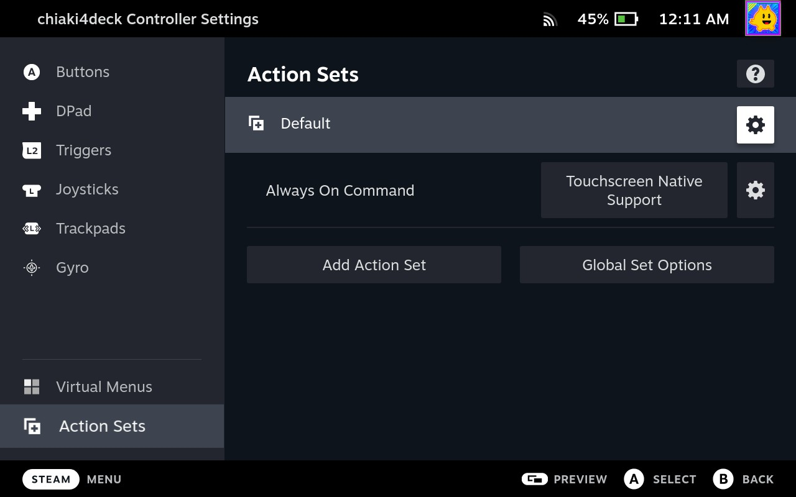
Use native gestures and swiping the touchscreen to perform touchpad actions. Please keep in mind that the touchscreen is mapping to the PlayStation touchpad (that is what the PlayStation console / games expect) so it behaves like a touchpad (i.e., cursor position moves based on your gesture relative to the current cursor position instead of snapping to your finger location). This is important to note for games with a cursor such as Chicory: A Colorful Tale as it can seem weird when using a touchscreen but is actually correct / desired in this case.
Use the edges of the touchscreen (top, bottom, left, or right 5% of the screen) to activate touch click.
Games with Region-Based Touchpad Click
For games that separate the PlayStation touchpad into 3 regions, you can use a left edge touchscreen tap for left touchpad click, right edge touchscreen tap for right touchpad click and top or bottom middle of the touchscreen tap for middle touchpad click.
Default chiaki4deck Layout Trackpad Mapping¶
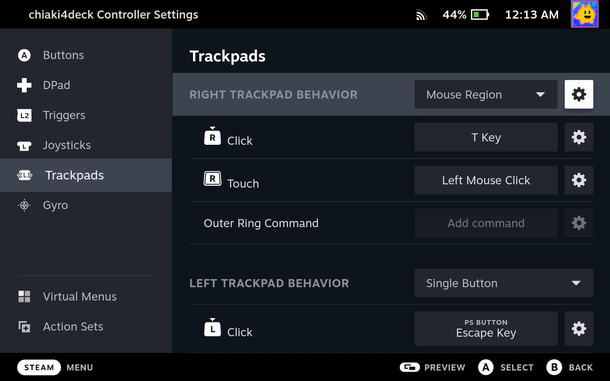
I have mapped the left trackpad as the PlayStation button and the right trackpad as the PlayStation controller touchpad (press for touchpad click and swipe for touchpad gestures). This essentially works the exact same way as when you're playing with the DualSense of DualShock4 touchpad. You touch/swipe for gestures and click for touchpad click.
The touchpad gestures are mapped using a mouse region with left mouse click on touch (i.e., simulates holding down the Left Button while moving a mouse) and the touchpad click is mapped to T.
Right Click Works too
Clicking the mouse Right Button instead of the T key would have the same effect.
Default chiaki4deck Layout Back Button Mapping¶
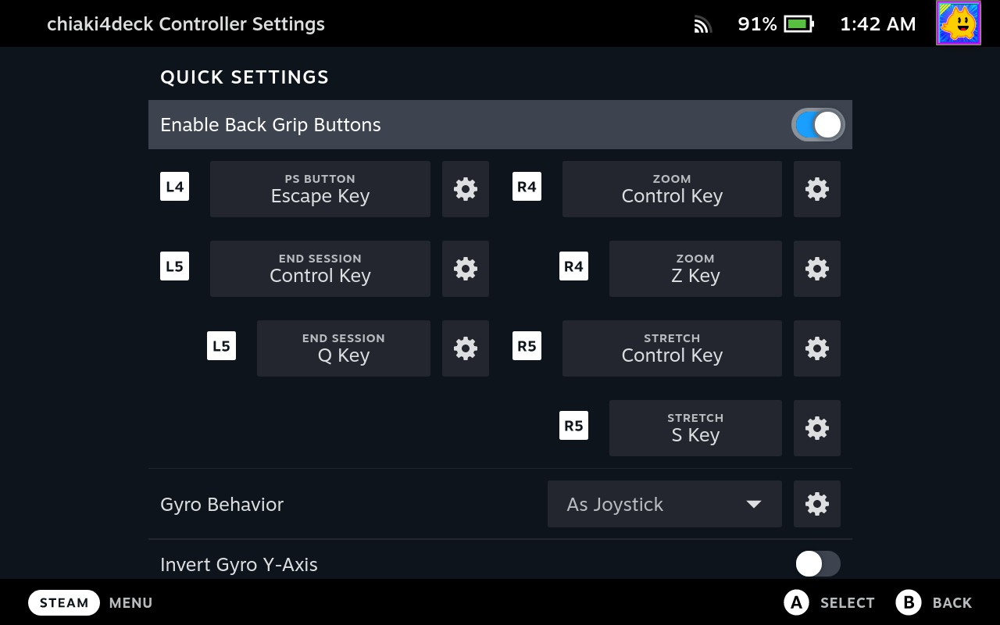
I have mapped L4 to toggle mic mute, L5 to end session (Ctrl+Q), R4 to zoom (Ctrl+Z), and R5 to stretch (Ctrl+S).
Default chiaki4deck Layout Gyro Mapping¶
I have also mapped gyro controls As joystick. Whenever you touch the right joystick, you can move the Steam Deck to aim / control the right stick (usually mapped to camera control) with motion (gyro) controls. You can use this on its own or for small adjustments to larger camera movements made by directly moving the right joystick. You can always change this by choosing to edit the layout and going into the gyro settings.
Native Gyro for Steam Deck
Gyro is also directly mapped under the hood for the Steam Deck controller. Thus, when you play a game that has native gyro controls, those will work without needing to do anything in your control mapping via Steam Input. When you are playing a game with native gyro support, you may want to change the gyro mapping from As joystick to As mouse so that gyro only maps to gyro in the game (i.e., you don't move the camera while trying to move a paintbrush using native gyro).
Don't turn off gyro entirely, use As mouse
You need to use As mouse instead of just turning off gyro altogether in Steam Input because turning off gyro altogether will pause gyro input and result in native gyro not working. This means games that have gyro in them for actions such as the flashlight in Last of Us or the paintbrush in Concrete Genie won't work properly. Using As mouse means only gyro set in the game itself will result in an action (since mouse movement by itself isn't mapped to anything in chiaki4deck) so it has the same effect of turning off gyro for games that don't use it for a required in-game control.
Of course, you could leave the right stick mapping on (so that it maps to both gyro and right joystick), if that is truly what you want.
Creating your Own Controller Profile¶
You can create your own controller profile by mapping the relevant buttons. The special button mappings (functions not assigned to the controller by default) [set these] and the standard button mappings (controls that directly map and are thus assigned by default) [no need to set these unless you prefer different mappings] are listed in tables below for your convenience.
Special Button Mappings (You need to assign these yourself)¶
| Function | Button | Description |
|---|---|---|
Quit |
Ctrl+Q | Close chiaki4deck cleanly, putting console in sleep mode if desired |
Zoom |
Ctrl+Z | Toggle between zoom (zoomed in to eliminate borders, cutting off edge of screen) and non-zoom (black borders) |
Stretch |
Ctrl+S | Toggle between stretch (stretched to eliminate borders, distorting aspect ratio of image), and non-stretch (black borders with default aspect ratio) |
PlayStation Button |
Esc | The PlayStation / home button as it normally functions on a PlayStation controller |
Share Button |
F | The Share button on the PS5 controller used for taking screenshots, videos, etc. stored on your PS5 and uploaded to the PlayStation app on your phone if you so choose. |
Touchpad Click |
T, mouse Right Button, tapping border (top, bottom, left or right 5%) of the touchscreen | These actions will all result in a touchpad click. For games that separate the touchpad into multiple regions, they work in conjunction with either the current mouse location (location of finger on Steam Deck trackpad) or current finger location (which edge of the touchscreen you tapped) to delineate which region you are using (most games just have one region for touchpad click though). |
Touchpad Motion |
Touchscreen touch, mouse Left Button + Mouse Movement (i.e., drag action / mouse region touch). |
Maps to the PlayStation touchpad (since that's what PlayStation games / the remote streaming console expect). This means that the "cursor" (if one is defined for the game like in Chicory: A Colorful Tale) moves according to your gestures but does not snap/follow your fingers' locations (i.e., it behaves like a touchpad as it should). |
Toggle Mic Mute |
Ctrl+M | The toggle microphone mute on and off button on the PlayStation controller. |
Two Button Shortcuts
If you want to create a shortcut that includes 2 buttons like Ctrl+Q, add the first key (i.e., Ctrl) and then click the gear icon to the right of the added command (i.e., Ctrl) and select Add sub command. Finally, fill in the new blank rectangle that appears with the desired second key (i.e., Q)

Using Steam Deck Controller Touchscreen in Your Custom Controller Profile¶
In order to use the Steam Deck touchscreen as a touchscreen instead of a mouse in Game Mode, you need to enable Touchscreen Native Support for it in controller options (this is done for you in the default chiaki4deck layout chiaki4deck+ mic). For your custom controller profile, do the following:
-
Edit your controller layout and scroll down to the
Action Setstab (on the left menu). -
Click the gear icon to the right of the given action set (i.e.,
Default). -
Select
Add Always-On command.
-
Move to the
SYSTEMtab (useR1to switch tabs) and selectTouchscreen Native Supportfrom the commands. -
Your
Action Setstab should now look like the following:
Gyro Controls¶
Gryo directly maps for games that support it (i.e., Concrete genie, Astro's Playroom, The Last of Us, Ghost of Tsushima, etc.) for the Steam Deck controller (using native interface since SDL doesn't support motion or trackpad controls for Steam virtual controllers) as well as attached controllers that SDL supports with an accelerometer and gyro (i.e., DualSense, DualShock 4, etc.). For this to work, do the following based on your controller:
- Steam Deck (works out of the box, nothing needed)
- DualSense, DualShock4 or other controller with gyro + accelerometer supported by SDL
- disable Steam Input for the controller following Using a DualSense and/or DualShock4 Controller with
chiaki4deckbelow
- disable Steam Input for the controller following Using a DualSense and/or DualShock4 Controller with
Additionally, you can use gyro controls for camera options with any game by mapping gyro As joystick and adding a condition for when it's used (i.e., On with a condition of right joystick touch) in the gyro settings for chiaki4deck. I have done this in the default chiaki4deck control setting and you can do it in your custom control scheme. However, when playing games that have native gyro support (such as Concrete Genie or The Last of Us) you will most likely want to change the gyro mapping from As joystick to As mouse so that gyro only maps to gyro in the game (i.e., you don't make your camera move when you're trying to shake your flashlight, etc.).
Don't turn off gyro entirely, use As mouse
You need to use As mouse instead of just turning off gyro altogether in Steam Input because turning off gyro altogether will pause gyro input and result in native gyro not working. This means games that have gyro in them for actions such as the flashlight in Last of Us or the paintbrush in Concrete Genie won't work properly. Using As mouse means only gyro set in the game itself will result in an action (since mouse movement by itself isn't mapped to anything in chiaki4deck) so it has the same effect of turning off gyro for games that don't use it for a required in-game control.
Haptics and Adaptive Triggers [Experimental]¶
PlayStation 5 haptics are mapped for both the DualSense controller (usb connection required) and the Steam Deck controller and adaptive triggers are mapped for the DualSense controller (usb or bluetooth). These need to be explicitly enabled by checking the PS5 features box in the GUI as shown in the picture below:
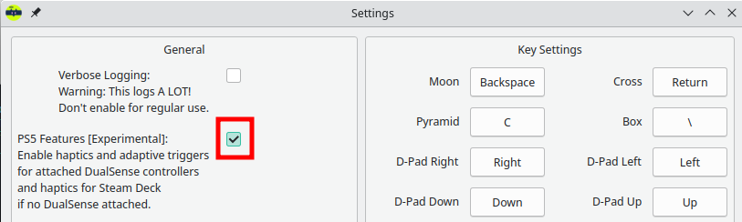
If you are using a DualSense controller in Game mode on the Steam Deck, you will also need to disable Steam Input for the controller when it's first plugged in following the "Turning off Steam Input" tab here. Once checked, haptics and adaptive triggers (DualSense only) will work in games that support them when streaming from a PlayStation 5. If the DualSense is plugged in via USB (either initially or plugged in during a gaming session), haptics will be directed to it. If you are using the Steam Deck and don't have a DualSense plugged in, haptics will be directed to it and played via the trackpads.
Microphone¶
Unmute microphone with either Ctrl+M or the mic button on the PlayStation controller. (This is set to L4 in the default chiaki4deck+ mic controller layout.) Then, use the microphone as normal. You can choose your microphone in the Steam Deck settings as well as choosing between audio inputs in the chiaki4deck menu.
Bluetooth headset microphones don't work on Steam Deck by default
The Steam Deck does not currently support microphones over bluetooth by default so you will need to either use a hardwired headset or the Steam Deck microphone unless you change your Steam Deck settings to enable bluetooth headset support (it is currently experimental and turned off by default due to a noticeable drop in audio quality). Thus, it's advised to use either a hardwired headset or the internal microphone. If you really want to use a bluetooth headset and can live with the drop in audio quality see How to enable bluetooth headset modes on Steam Deck.
Standard Button Mappings (These directly map and don't need to be specifically set)¶
| Function | Button |
|---|---|
right joystick |
right joystick |
left joystick |
left joystick |
dpad up |
dpad up |
dpad left |
dpad left |
dpad down |
dpad down |
dpad right |
dpad right |
start button |
option button |
triangle |
Y button |
square |
X button |
cross |
A button |
circle |
B button |
R1 |
R1 |
R2 |
R2 |
R3 |
R3 (right-stick click) |
L1 |
L1 |
L2 |
L2 |
L3 |
L3 (left-stick click) |
Using a DualSense and/or DualShock4 Controller with chiaki4deck¶
While most users will want to just use chiaki4deck with the Steam Deck controller, you can also attach a DualShock 4 or DualSense controller via bluetooth or usbc. The controls will map automatically and there is even native touchpad (including gestures), gyro, haptics (DualSense via usb/usbc only), and adaptive triggers (DualSense only) support. This can be especially useful if you're playing chiaki4deck when connected to a dock using an external monitor or TV or if you just really like the feel of the traditional PlayStation controllers.
Pairing your DualShock 4 / DualSense with Steam Deck via Bluetooth
While holding the Share button, hold the PlayStation Button to put your controller into pairing mode. On the Steam Deck, hit the STEAM button and then select the Settings tab and then the Bluetooth tab (i.e., STEAM button->Settings->Bluetooth). Then, select your device from the list of devices. Once paired, it will automatically connect in the future when you press the PlayStation button on the controller.
Enabling chiaki4deck to Work with DualSense / DualShock 4¶
Make Sure your Controller is Connected for Configuration
Your PlayStation controller needs to be connected via bluetooth or usb cable for its tab to show up when you visit the chiaki4deck game page on your Steam Deck and edit the saved controller configuration. This configuration is specifically for your PlayStation controller and separate from the Steam Deck controller configuration for chiaki4deck. It will be activated automatically when you use the PlayStation controller with chiaki4deck (it will show up as a 2nd controller configuration since you will now have at least 2 active controllers [Steam Deck + PlayStation controller])
Turning off Steam Input gets you as close to a native experience with your controller as possible (including the Home button serving as both the Steam and PlayStation button simultaneously).
This is necessary for the following capabilities:
- Haptics (DualSense only, must be attached via USB)
- Adaptive triggers (DualSense only, USB or bluetooth)
- Gyro controls for games like Concrete Genie and Astro's Playroom (any controller SDL supports for gyro + accelerometer)
Won't Have Access to All chiaki4deck controls
With this option you won't have access to all of the shortcuts for chiaki4deck (toggling stretch Ctrl+S and zoom Ctrl+Z screen options and quitting gracefully Ctrl+Q) on your DualSense. However, if you have a keyboard connected to your Steam Deck, you can always use that for those shortcuts.
Turn off Steam Input for your PlayStation controller by doing the following:
-
Go to the
chiaki4deckgame page -
Select the gamepad icon on the right hand side of the page to go the controller configuration menu
-
Move to the controller configuration tab for your PlayStation controller (if not already there)
-
Click the gear icon to the right of
Edit Layout -
Choose
Disable Steam Inputfrom the menu.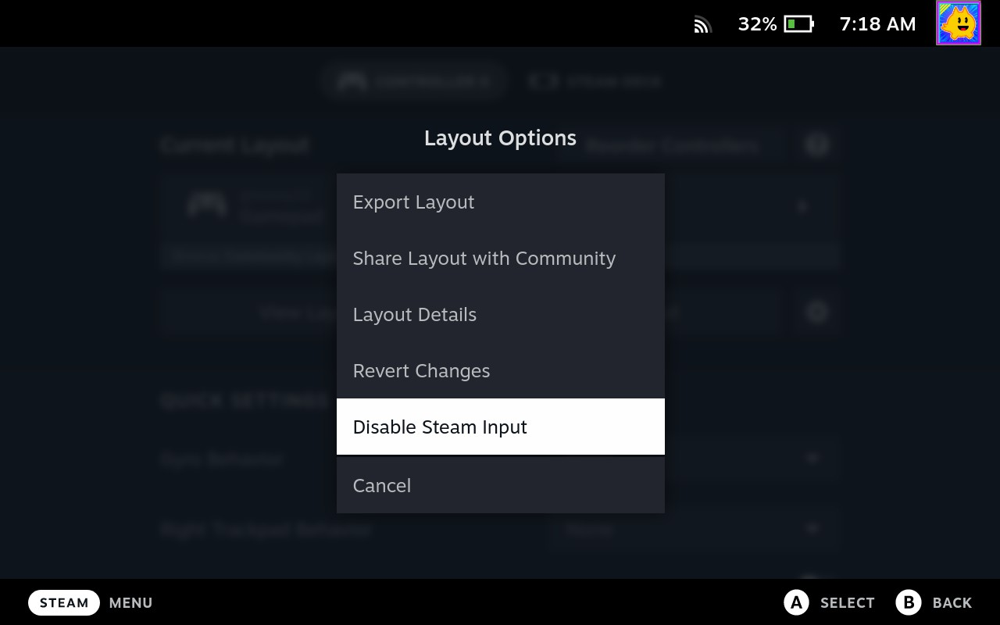
This tab shows you how to use Steam Input to map all of the controls for chiaki4deck to your PlayStation controller. This is great if you are using chiaki4deck with a TV. Since the PS Button maps to the STEAM button automatically and there are several commands in the default chiaki4deck configuration bound to back buttons (that don't exist on the PlayStation controllers), I have added these controls to a touch menu. It will show up when touching the left pad of the chiaki4deck controller. You have to click to select one of the extra commands (so you don't accidentally choose one during gameplay) from the radial menu. See the picture below for an example of what this looks like in-game:

No Haptics, Adaptive Triggers, or Gyro
Using Steam Input with your DualSense controller means you won't have access to haptics, adaptive triggers, or gyro controls via your DualSense. If these are important to you, please disable steam input according to the other tab.
The easiest way to configure all of the necessary shortcuts for chiaki4deck on DualSense is to copy the profile I have created in the COMMUNITY LAYOUTS tab with the aforementioned touch menu for extra commands. DualShock 4 can also use a similar layout mapping.
Add Default PlayStation Controller Mapping
-
Go to the
chiaki4deckgame page -
Select the gamepad icon on the right hand side of the page to go the controller configuration menu
-
Move to the controller configuration tab for your PlayStation controller (if not already there)
-
Click the current layout box (it says: Browse Community Layouts for games without official controller support underneath it).
-
Move to the
COMMUNITY LAYOUTStab and selectDualSensebygmoney23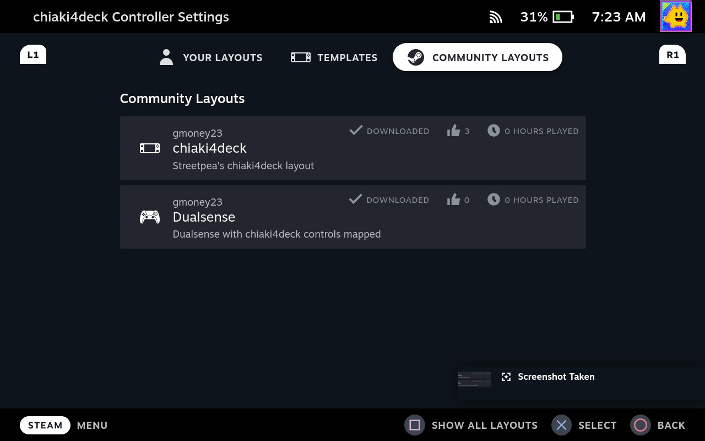
This is what the full mapping looks like for reference:

Map it How you Want
Using Steam Input there are a variety of ways to map controls. Do whatever you like best. Additionally, you can use gyro controls for camera options with games that don't support native gyro by mapping the gyro As joystick. Make sure to set an appropriate condition for when it's used (i.e., when holding R1 or Always On) in the gyro settings for the PlayStation controller configuration option of chiaki4deck. For example, I have done this in the Steam Deck controller chiaki4deck control setting and you can do it for your DualSense control scheme as well. However, when playing games that have native gyro support (such as Concrete Genie or The Last of Us) you will most likely want to either temporarily this option or make sure to set something to enable it that you won't hit accidentally. Otherwise, both the native gyro and the action you map will be done in-game which can make your camera move when you're trying to shake your flashlight, etc.
Ended: Setup
Updates ↵
chiaki4deck Updates¶
This section covers the updates to Chiaki in chiaki4deck. Information about each release and how to update is in the Releases Section. Updates that are currently done (implemented) are listed in the Done section along with details, while updates that are planned for the future are listed in the Planned section.
Why These Updates?
I started by simply choosing to update things that would give me a better experience with Chiaki on my Steam Deck. I have also begun incorporating suggestions from users of chiaki4deck via chiaki4deck's GitHub issues page (both issues created by GitHub users as well as issues from Reddit users that I created for them in GitHub for tracking). Given the current state of the Chiaki project (maintenance mode), I'm not sure if all of these changes will be accepted upstream. However, so far several changes included here (some by Street Pea and some by Johannes Baiter) have been merged upstream (though are not part of the official flatpak yet since a new release has not been cut). These are marked appropriately in the done section with the relevant footnotes. I will also continue sending patches upstream for my Chiaki updates. I have created chiaki4deck as a means to distribute these changes to others using the Steam Deck as well as others wanting to add additional beneficial features on top of mine. Currently, I am aiming to make chiaki4deck work for all traditional Chiaki users (may not benefit other users as much as Steam Deck users, but wouldn't be bad for those users either).
chiaki4deck Releases¶
Moving to FlatHub¶
Legacy Repo Deprecation
Chiaki4deck is now on flathub. If you previously installed chiaki4deck via the konsole the flatpak has changed to io.github.streetpea.Chiaki4deck. The old repo is now deprecated in favor of using Flathub since Flathub is added by default to the Steam Deck and the hosting is at no cost to the project (unlike the initial repo). While the software will still be accessible from the old repo, it is encouraged for users to switch over.
To migrate to the flathub repo do the following:
-
Move chiaki4deck's configuration files to their new location
mv ~/.var/app/re.chiaki.Chiaki4deck ~/.var/app/io.github.streetpea.Chiaki4deck -
Update automatic launcher script to use
io.github.streetpea.Chiaki4decksed -i 's/re.chiaki.Chiaki4deck/io.github.streetpea.Chiaki4deck/g' ~/.var/app/io.github.streetpea.Chiaki4deck/config/Chiaki/Chiaki-launcher.sh -
Uninstall the existing legacy
chiaki4deckflatpakflatpak uninstall -y re.chiaki.Chiaki4deck -
Install chiaki4deck from flathub using Discover store app or
flatpak install -y --user flathub io.github.streetpea.Chiaki4deck -
Change properties of non-steam game to point to:
/home/deck/.var/app/io.github.streetpea.Chiaki4deck/config/Chiaki/Chiaki-launcher.sh
Updating chiaki4deck¶
In order to update your already installed chiaki4deck to the newest version, either:
-
Check for updates in
Discoverand update thereOR
-
Update via the
konsolewith:flatpak update -y io.github.streetpea.Chiaki4deckflatpak update --user -y re.chiaki.Chiaki4deck
Releases (Newest First)¶
1.4.1¶
Small patch release
- Adds multiplier to accelerometer values to match acceleration values of lighter DualSense/DualShock 4 controller. Fixes issue in some games where the acceleration value wasn't high enough when moving/shaking the Steam Deck to trigger the in-game action.
1.4.0¶
Mic support
- Adds mic support to chiaki4deck
- Noise suppression and echo cancelling for mic configurable in the chiaki4deck menu
Why doesn't my bluetooth headset mic show up as an available microphone on Steam Deck?
The Steam Deck does not currently support microphones over bluetooth by default so you will need to either use a hardwired headset or the Steam Deck microphone unless you change your Steam Deck settings to enable bluetooth headset support (it is currently experimental and turned off by default due to a noticeable drop in audio quality). Thus, it's advised to use either a hardwired headset or the internal microphone. If you really want to use a bluetooth headset and can live with the drop in audio quality see How to enable bluetooth headset modes on Steam Deck.
Update Actions for Existing Users¶
-
[Optional] Switch to the new default control layout
chiaki4deck+ micwhich adds toggle mic mute toL4. Alternatively, you can manually add toggle mic mute to a button of your choice by mapping Ctrl+M to that button.
1.3.4¶
Small patch release
- Adds lowpass filter for haptics and tweaks haptic response => reduced noise while using Steam Deck haptics
- Automatic connection option for GUI
- Update automation script to work for PS4 remote connection
1.3.3¶
Small cosmetic release
- Update icons and display name to
chiaki4deck
1.3.2¶
Small patch release
- disable Steam Deck haptics when external controllers connected
- add vertical orientation option for motion controls
- let analog trigger actions work w/out PlayStation features enabled
- merge update to RGB mapping with HW accelerated graphics from jonibim
1.3.1¶
Small patch release
- Added scrollbar to settings since bottom of page was cut off on Steam Deck
- Fixed gyro mapping regression (causing drift in some games [i.e., Dreams])
- Updated HIDAPI (dependency) to 0.13.1 due to critical bug in release 0.13.0
Install update following updating chiaki4deck.
1.3.0¶
- Native gyro support for Steam Deck
- Haptics support for DualSense (via USB) and Steam Deck [experimental]
- Adaptive triggers with DualSense (via USB or Bluetooth)
- Automation script tweaks (allow using hostname and specifying external IP / hostname in addition to local one)
- Documentation Updates (new DIY sections on building docs + development builds on Steam Deck + document various 1.3.0 features and changes for new and existing users)
- Bug fixes (audio bug causing crash in base Chiaki fixed, mismatch between cli and automation script leading and lagging space handling fixed, etc.)
Update Actions for Existing Users¶
-
[Optional] Enable the experimental PlayStation 5 features (enables PlayStation 5 haptics for Steam Deck and DualSense [via USB] and adaptive triggers for DualSense [via USB or bluetooth]).
-
Check the box shown in the image below in the GUI.
-
[If you are using a DualSense] Turn off Steam Input for the DualSense following the "Turning off Steam Input" tab in this section.
-
-
[Optional] Add an external IP/hostname to the automation by revisiting (running back through) the Automation section. Doing this will make the automation use your external address if you aren't connected to your home wireless network.
Note
This is for those that have gone through the process to make a connection outside of their local network to get an external IP/hostname to use.
1.2.0¶
chiaki4deck's 2nd update since initial release.
What You Need to Do to Update¶
-
Updating your controller config to the new default (
chiaki4deck+) and/or updating your custom controller layouts to take advantage of native touchscreen / trackpad controls. See the Controller Options section for details.-
Using the Default Controller Profile (Recommended Starting Point):
Open the
chiaki4deckController Options section, browsing theCOMMUNITY LAYOUTStab for thechiaki4deck+config, downloading it, and setting it as your new layout.[Approximate Time Estimate: 1 minute]
-
Creating a Custom Controller Profile (Great for tinkering, especially for updating the default profile to meet your needs exactly):
Make a custom controller profile using the Creating Your Own Controller Profile section, taking special note of the Special Button Mappings and Using Steam Deck Controller Touchscreen in Your Custom Controller Profile
[Approximate Time Estimate: 10-20 minutes depending on your experience with Steam Deck Controller Layouts]
-
-
[OPTIONAL] If you have a PlayStation Login Passcode and want entering it to be automated, please revisit (run back through) the Automation section (don't need to revisit any of the other sections). This is really quick if you use the "Automated Instructions (Recommended)" Tab. [Approximate Time Estimate: 5 minutes]
Success
Once your script is updated, since it will be in the same location as before, the Game Mode and controller setup will automatically carry over to this updated automation script. Thus, after revisiting the Automation section, you can immediately go back to using
chiaki4deck.
What you Get by Updating¶
-
Full mapping for the PlayStation touchpad to the Steam Deck's touchscreen and trackpad (you can use either or switch between them if you so choose). See the touchscreen and trackpad mapping subsections of the Controller Options section for details.
General Touchscreen and Mouse Support
This update adds general touchscreen and mouse support for the PlayStation touchpad. Thus, it's applicable beyond the Steam Deck. With regard to
chiaki4deck, the Steam Deck is the focus / inspiration for the update. -
Updated RGB color mapping used in OpenGL widget to be more color accurate thanks to Egoistically's Chiaki fork. See Updated RGB Mapping for details and a before and after comparison in Ghost of Tsushima.
-
Automatic Login Passcode Entry (For Users with a Login Passcode)
If you have to enter a login passcode each time you turn on your PlayStation console and login, you can now enter it into the automation to login from your personal Steam Deck without the hassle of bringing up the virtual keyboard with
Steam++X and entering it in each time.
1.1.0¶
chiaki4deck's 1st update since initial release.
What You Need to Do to Update¶
-
Revisiting (running back through) the Automation section (don't need to revisit any of the other sections). This is really quick if you use the "Automated Instructions (Recommended)" Tab.
Success
Once your script is updated, since it will be in the same location as before, the Game Mode and controller setup will automatically carry over to this updated automation script. Thus, after revisiting the Automation section, you can immediately go back to using
chiaki4deck. -
[If desired] Visit the Using a DualSense and/or DualShock4 Controller with
chiaki4deckto see how to setup native touchpad and gyro controls when playingchiaki4deckwith the DualShock4 and DualSense controllers.
What you Get by Updating¶
-
PlayStation controller native touchpad + gyro controller support enabled for the flatpak with setup instructions in Using a DualSense and/or DualShock4 Controller with
chiaki4deck. This is great for when your using a TV or monitor with your Steam Deck. -
Enhanced automated launch
Specifically, I upgraded the discovery cli command to work properly and updated the automation script (and accompanying generator script) to to take advantage of this command instead of ping to handle some cases that failed intermittently before.
Now, the automation works for edge cases such as:
-
user is remote playing from outside their home wireless network (given they've already done the networking setup for that)
-
console is in the process of going to sleep or coming online when remote play session launched
-
console is currently downloading a large game
-
user doesn't have ping enabled on his/her wireless network
-
1.0.0¶
chiaki4deck's initial release including the following notable updates:
-
3 view modes for non-standard screen sizes
-
Quit function Ctrl+Q
-
Enabled Automated Launch
Completed (Done) Updates¶
Enabled Touchpad for Steam Deck Touchscreen and/or Trackpads¶
Added Touchpad support for touchscreens (use outer edges of touchscreen for touchpad click) as well as mouse input (enables trackpads to be fully supported with gestures on touch and touchpad click on click). For an example mapping these in a Steam Deck controller profile, see Default chiaki4deck Layout Touchscreen Mapping and Default chiaki4deck Layout Trackpad Mapping respectively. Downloading the updated chiaki4deck+ controller layout will have these mappings set for your convenience.
Enabled Gyro for Steam Deck¶
Added gyro support for Steam Deck via a native interface since SDL2 doesn't support Steam Deck gyro due to Steam's virtual gamepads not providing gyro.
Enabled Mic Support¶
You can now attach a microphone and use it to chat online or use in games. There is also noise suppression and echo cancelling for the mic you can configure in the chiaki4deck settings.
[Experimental] Enabled Haptics for Steam Deck and DualSense controller + adaptive Triggers for DualSense¶
Haptics enabled for PlayStation 5 thanks to Johannes Baiter. You can use a USB connected DualSense for haptics and adaptive triggers or a bluetooth connected DualSense for just adaptive triggers. To use these features for the DualSense in game mode, please disable Steam Input for the DualSense controller following the "Turning off Steam Input" tab in this section.2.
I have also added the capability to play the haptics via the Steam Deck controller using the native interface I added. Since these features are experimental, you need to opt-in via a checkbox in the GUI.
Updated RGB Mapping¶
RGB mapping update thanks to Egoistically via a Chiaki fork which is of course copy-left under the GNU Affero General Public License version 3 as are all of the other chiaki4deck changes. I added the patches to chiaki4deck and it results in a more accurate picture. Joni Bimbashi updated the initial mapping to work with HW acceleration. Below is a BEFORE and AFTER from Ghost of Tsushima.
BEFORE
AFTER

3 view modes for non-standard screen sizes¶
It's great to have these options for Steam Deck's non-standard 1280x800 resolution.3
Using These Options Without the Automation [Not Recommended] (click me to open)
If for some strange reason you want to launch chiaki4deck via the GUI instead of the automation (not recommended due to the items noted here), it launches by default in a window matching the aspect ratio of the stream (i.e., 16:9). This means that the stream output exactly matches the stream window. In this scenario, there is nothing to stretch or zoom the stream output to because the stream output already perfectly matches with the stream window. If you want to stretch or zoom, you would need to first either:
-
Adjust the window to a bigger or smaller size with your mouse in
Desktop Mode(perhaps you want to usechiaki4deckas half of your screen in Desktop mode)OR
-
Use fullscreen mode by:
-
Pressing F11 (either directly in
Desktop Modeor via a controller mapping inGame Mode)OR
-
Double clicking on the screen in
Desktop Mode
-
Then, you could use stretch and/or zoom accordingly (i.e., Ctrl+S / Ctrl+Z or button mapped to them in game mode).
-
Normal (default) [used for fullscreen launch option]
Maintains aspect ratio, adds black bars to fill unused parts of screen

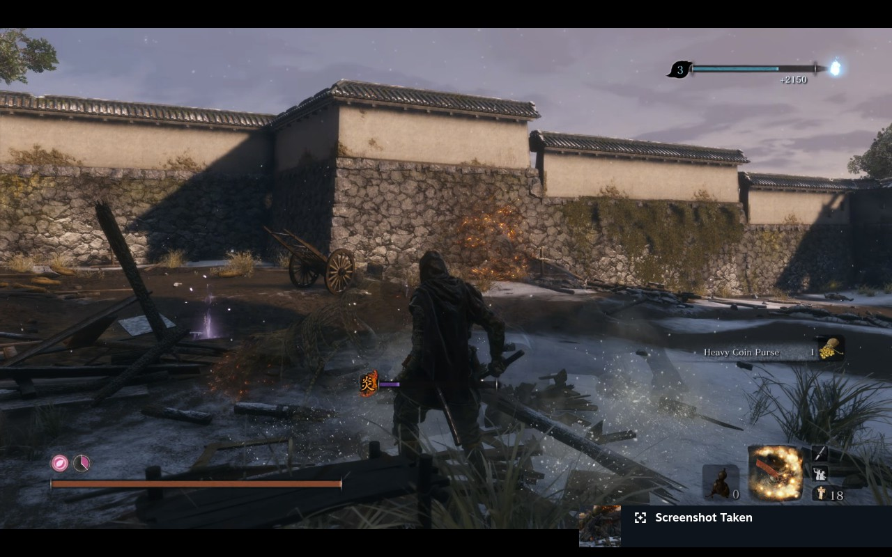
-
Zoom using Ctrl+Z to toggle
Maintains aspect ratio, cutting off edges to fill screen
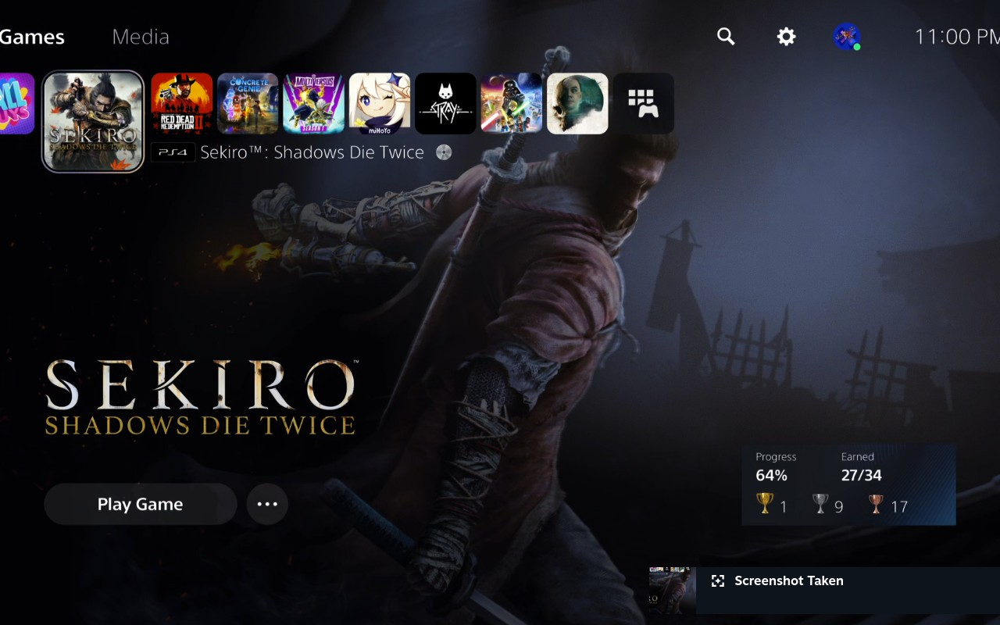
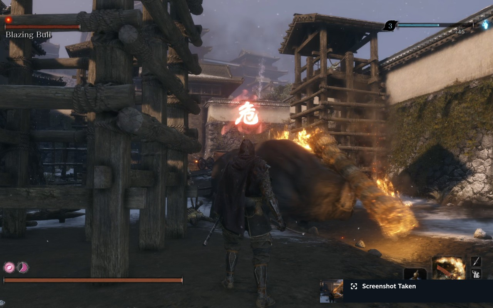
-
Stretch using Ctrl+S to toggle
Stretches image (distorting aspect ratio) to fill screen

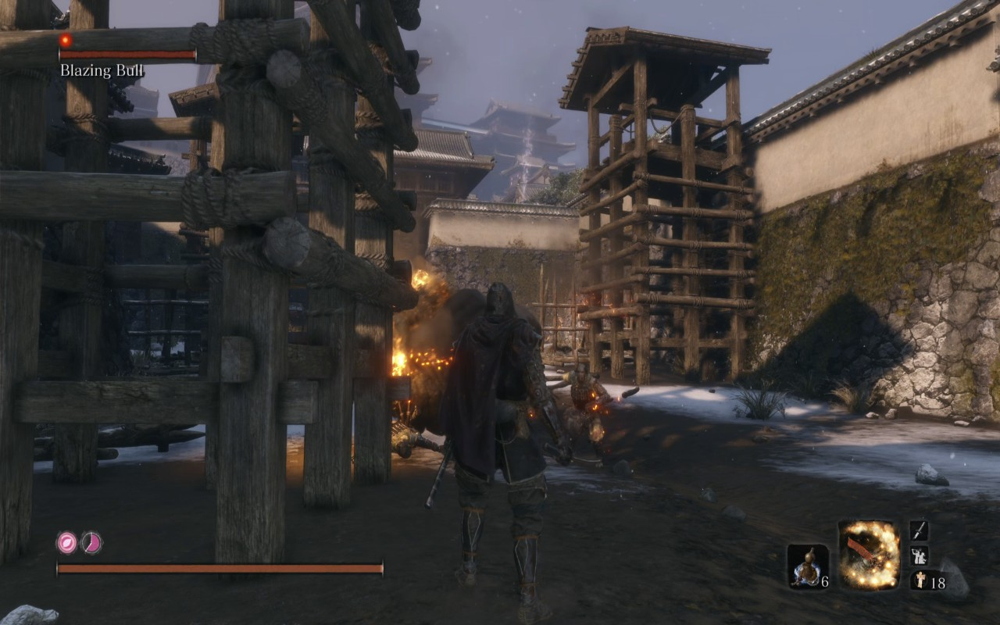
Quit function Ctrl+Q¶
Cleanly quits Chiaki, respecting the user's configuration option of either asking to put PlayStation console sleep, putting PlayStation console to sleep without asking, or leaving PlayStation console on.3
What does this do for me?
Now, if you hit a back button (or other button) mapped to Ctrl+Q on your Steam Deck, your remote play session will shut down cleanly and put your console to sleep automatically if you so choose. This means you no longer have to manually put your console to sleep via a menu or the power button on the PlayStation console itself.
Enabled Automated Launch¶
This provides the following:
-
Skips the need to visit the configuration screen and use the Steam Deck's touchscreen each time.
-
Only 1 window is open during game streaming instead of 2, eliminating the flashing issue that would occur during accidental window switching by the Steam Deck's
Game Mode -
Gives default game mode option to launch in fullscreen, stretch or zoomed mode.
-
Passes login passcode automatically instead of manually typing it in each time.
If you have to enter a passcode (4 digit pin) every time you boot up your PlayStation to play, you have a login passcode. If not, this doesn't affect you.
If you choose to not use the automation for whatever reason and have a PlayStation Login Passcode, you will need to do the following every time you launch
chiaki4deckand login:-
Wait for the login passcode dialog box to appear.
-
Use attached keyboard or Hit
STEAM+ X to bring up the on-screen Steam Deck virtual keyboard. -
Enter you passcode using the keyboard (either via touch or controller navigation) to login to your PlayStation console (use Enter / R2 to submit the passcode).
-
I have added a helper script to generate a Chiaki-launcher.sh script as well as provided complete instructions in the Automation section.
Enabled Touchpad and Gyro Controls with DualSense/DualShock 4 Controller for Flatpak¶
This makes it as easy as possible for Steam Deck users to use touchpad and gyro support with their DualSense or DualShock 4 controller. See Using a DualSense and/or DualShock4 Controller with chiaki4deck to set it up for yourself.3
The DualSense/DualShock 4 touchpad and gyro controls work with the binary version of Chiaki but don't work with the official flatpak version. Luckily for you, they now work with the chiaki4deck flatpak! 
Future Updates Planned¶
Update Haptics from Experimental¶
After feedback and potential future improvements (if necessary), graduate haptics to a regular (default enabled) vs. experimental future.
Ended: Updates
DIY ↵
Building the Flatpak Yourself¶
For Advanced Users Only
This is for advanced users who are comfortable going through the build process themselves, such as those who want to build on top of the changes I have made. For regular users, please install using the Installation Section.
Prerequisites¶
-
A linux operating system (can of course use a VM via VMWare, virtual box, WSL2, etc.)
-
The following packages (install instructions separated by Linux distribution below):
-
gpg
-
curl
-
flatpak
-
flatpak-builder
sudo apt update && sudo apt install -y gnupg curl flatpak flatpak-buildersudo yum update && sudo yum install -y gnupg curl flatpak flatpak-buildersudo pacman -Syy && sudo pacman -S gnupg curl flatpak flatpak-builderNote
Steam OS is a read-only filesystem so you will need to temporarily disable this to install flatpak-builder. Additionally, keep in mind that your installed packages may get wiped during a system update and need to be reinstalled following this process again in the future.
-
Disable read-only mode
sudo steamos-readonly disable -
Init keyring
sudo pacman-key --init -
Populate keyring with Arch Linux keys
sudo pacman-key --populate archlinux -
Install dependencies
sudo pacman -Syy && sudo pacman -S gnupg curl flatpak flatpak-builder -
Re-enable read-only mode
sudo steamos-readonly enable
-
-
Flathub, the default flatpak repository
flatpak remote-add --if-not-exists flathub https://flathub.org/repo/flathub.flatpakrepo
Building the Flatpak¶
Get Flatpak Dependencies¶
-
Install the necessary flatpak runtime and associated sdk
flatpak install -y flathub org.kde.Platform//5.15-22.08 flathub org.kde.Sdk//5.15-22.08 -
Create a directory for your build files and switch into it
mkdir -p ~/build-chiaki4deck-flatpak && cd ~/build-chiaki4deck-flatpak -
Get the flatpak manifest file for
chiaki4deckcurl -LO https://raw.githubusercontent.com/streetpea/chiaki4deck/main/scripts/flatpak/chiaki4deck.yaml
Create gpg Key for Signing your Builds and Repositories¶
-
Create the gpg key pair
gpg --quick-gen-key chiaki4deck-diy -
Export public key (private key stays on your machine in your gpg directory) [~/.gnupg by default].
gpg --export chiaki4deck-diy > chiaki4deck-diy.gpg
Create Flatpak¶
-
Build the flatpak for
chiaki4deckflatpak-builder --repo=chiaki4deck-diy --force-clean build chiaki4deck.yaml --gpg-sign chiaki4deck-diyHow long
 will this take?
will this take?This build process is compiling first the dependencies and then Chiaki itself with the updates included in
chiaki4deck. This will take a long while (read: 15+ minutes depending on the resources of the build system itself) the first time it runs. However, since flatpak caches builds, if you make changes to just thechiaki4deckrepo code and then run a new build, it will import the dependencies from cache and only start building from scratch when it detects the first change in the stack. This results in subsequent builds going much faster than the first build you make. -
Update static deltas (makes upgrading require less downloaded data for end-users)
flatpak build-update-repo chiaki4deck-diy --generate-static-deltas --gpg-sign=chiaki4deck-diy
Adding your Own Remote and Installing from It¶
-
Add the repository you built as a local remote repository
flatpak --user remote-add --gpg-import chiaki4deck-diy.gpg chiaki4deck-diy ~/build-chiaki4deck-flatpak/chiaki4deck-diy -
Install your self-built
chiaki4deckflatpak from your new remoteflatpak --user install chiaki4deck-diy io.github.streetpea.Chiaki4deck
Building the Documentation Yourself¶
For Documentation Contributors Only
This is for people who want to update the documentation of chiaki4deck and see the updates locally or if you are a regular user and are curious on how to do it. In most cases, just accessing the documentation via the site https://streetpea.github.io/chiaki4deck/ is best. If you want to access the documentation without internet access, instead of following this documentation, you should navigate to the print page (which displays the documentation in printable format). Then, Print->Save to pdf in your web browser and access the PDF freely offline.
Installing Necessary Pre-requisites¶
- Install pip3 on your computer, if it's not already installed (instructions vary depending on Operating System)
-
Install mkdocs and plugins used in chiaki4deck documentation
pip3 install mkdocs mkdocs-material mkdocs-git-revision-date-localized-plugin mkdocs-print-site-plugin -
Get a local copy of the source code with:
git clone https://github.com/streetpea/chiaki4deck.gitgit clone git@github.com:streetpea/chiaki4deck.gitgh repo clone streetpea/chiaki4deck -
Change into the source code directory in your terminal
-
Serve the documentation in a terminal while in your source code directory with:
mkdocs serve -
Open a web browser and access the documentation
The above
mkdocs servecommand should output an address to access the documentation which by default is: http://127.0.0.1:8000 which is over localhost (only accessible locally). Go to this address to access the documentation.Documentation updates automatically
If you leave the terminal tab where you ran
mkdocs serveopen, the docs will update automatically when your save your changes to the file. This way as you make changes you can check your changes at the given web site, displaying in the same way as it will when displayed as a static website on GitHub. -
Make edits to the relevant markdown files in the
docs/subfolder, and watch the changes display in realtime in your web browser when you save your file updates.
Special Documentation Features
To use the special features of mkdocs-material and the plugins used in these docs that enhance the documentation from traditional markdown, please take a look at the syntax for the various features. You can find examples of them in action in the markdown of this site by either:
-
Inspecting a given page of the site in your web browser
- scroll to the top of a page with a feature you want to see how to use
- click the page with an eye icon to the right of the title
- Inspect the markdown for the part of the page with the given feature
OR
- See the markdown for the entire site in the
docs/subfolder of the GitHub project, navigating the markdown files for each page
Additionally, you can find more examples and explainers on the mkdocs-material reference page.
Developing chiaki4deck updates on Steam Deck¶
This is for contributors that want to make/test updates to the codebase without building a new flatpak each time.
Addding Dependencies
If you want to add new dependencies that aren't already included in the flatpak modules or SDK, then you will need to create a new flatpak build adding that module or install the module locally and it to your PATH. However, this would only be needed in rare circumstances.
Setup Environment¶
-
Install flatpak and/or build a new one with any added dependencies following Building the Flatpak Yourself
flatpak install --user -y https://raw.githubusercontent.com/streetpea/chiaki4deck/main/scripts/flatpak/io.github.streetpea.Chiaki4deck-devel.flatpakrefCreating local flatpak builds
If you want to create flatpak builds from local files, you can do this by changing the manifest sources from:
sources: - type: git url: https://github.com/streetpea/chiaki4deck.git branch: mainto:
sources: - type: dir path: path-to-chiaki4deck-git -
Install the
Debugextensions for the SDKflatpak install org.kde.Sdk.Debug//5.15-22.08 -
Install the
Debugextension for the application build for debuggingflatpak install io.github.streetpea.Chiaki4deck.Debug -
Clone the project onto your Steam Deck with:
git clone https://github.com/streetpea/chiaki4deck.gitgit clone git@github.com:streetpea/chiaki4deck.gitgh repo clone streetpea/chiaki4deck
Creating and Debugging Builds without New Flatpak Build¶
-
Set your Chiaki code dir as an environment variable (can add to
~/.bashrcto persist across restarts)export chiaki_code_dir="path_to_chiaki_code_dir"where
path_to_chiaki_code_diris the path to the directory you created with thegit clonein the last step.Example Code Directory
export chiaki_code_dir="~/Documents/chiaki-code" -
Enter the development version of the flatpak with the chiaki4deck source code mounted with:
flatpak run --filesystem="${chiaki_code_dir}" --env=PKG_CONFIG_PATH=/app/lib/pkgconfig --command=bash --devel io.github.streetpea.Chiaki4deck-develand
--envis to set your pkgconfig path to pick up flatpak modules (done by default by flatpak-builder) -
Create a build using cmake as per usual
- Change into the git directory you mounted
-
Make a directory for your debug build
mkdir Debug -
Change into debug directory
cd Debug -
Create build files with cmake
cmake -DCMAKE_BUILD_TYPE=Debug .. -
Build
chiaki4deckmake
- Change into the git directory you mounted
-
Make a directory for your debug build
mkdir Release -
Change into debug directory
cd Release -
Create build files with cmake
cmake -DCMAKE_BUILD_TYPE=Release .. -
Build
chiaki4deckmake
-
Run build as usual from executables (using gdb for debugging Debug build)
From
Debugdirectory using gdb:gdb ./gui/chiakiFrom
Releasedirectory:./gui/chiaki -
Make edits to the source code to implement your changes
Editing code on Steam Deck
Personally, I use vscode which you can install as a flatpak from Discover. You can open your chiaki code directory using vscode from your Steam Deck desktop and save changes. Then, these changes which will be reflected in your flatpak (since you mounted the chiaki code directory to your flatpak in the steps above) when you do a new build in your flatpak environment. The process would be similar with other code editors installed on your Steam Deck.
-
After making changes to the source code, simply rebuild with make as per usual
Debug Coredump From a flatpak¶
-
Get process from coredump
-
Run coredumpctl
coredumpctl -
Get pid for your application from list
-
-
Open gdb session for your flatpak with the given pid
flatpak-coredumpctl -m given_pid flatpak_nameExample given pid 4822 and flatpak name
io.github.streetpea.Chiaki4deck-develflatpak-coredumpctl -m 4822 io.github.streetpea.Chiaki4deck-devel -
Use gdb commands as per usual such as
bt fullFor a comprehensive guide on gdb commands see Debugging with GDB